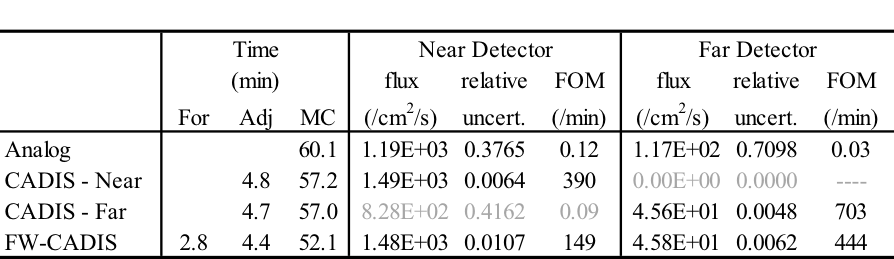

MAVRIC: Monaco with Automated Variance Reduction using Importance Calculations¶
D. E. Peplow and C. Celik
Introduction¶
Monte Carlo particle transport calculations for deep penetration problems can require very long run times in order to achieve an acceptable level of statistical uncertainty in the final answers. Discrete-ordinates codes can be faster but have limitations relative to the discretization of space, energy, and direction. Monte Carlo calculations can be modified (biased) to produce results with the same variance in less time if an approximate answer or some other additional information is already known about the problem. If importances can be assigned to different particles based on how much they will contribute to the final answer, then more time can be spent on important particles, with less time devoted to unimportant particles. One of the best ways to bias a Monte Carlo code for a particular tally is to form an importance map from the adjoint flux based on that tally. Unfortunately, determining the exact adjoint flux could be just as difficult as computing the original problem itself. However, an approximate adjoint can still be very useful in biasing the Monte Carlo solution [Wag97]. Discrete ordinates can be used to quickly compute that approximate adjoint. Together, Monte Carlo and discrete ordinates can be used to find solutions to thick shielding problems in reasonable times.
The MAVRIC (Monaco with Automated Variance Reduction using Importance Calculations) sequence is based on the CADIS (Consistent Adjoint Driven Importance Sampling) and FW-CADIS (Forward-Weighted CADIS) methodologies [WH98] [Wag02] [HW03] [WBP07] MAVRIC automatically performs a three-dimensional, discrete-ordinates calculation using Denovo to compute the adjoint flux as a function of position and energy. This adjoint flux information is then used to construct an importance map (i.e., target weights for weight windows) and a biased source distribution that work together—particles are born with a weight matching the target weight of the cell into which they are born. The fixed-source Monte Carlo radiation transport Monaco [Pep11] then uses the importance map for biasing during particle transport, and it uses the biased source distribution as its source. During transport, the particle weight is compared with the importance map after each particle interaction and whenever a particle crosses into a new importance cell in the map.
For problems that do not require variance reduction to complete in a reasonable time, execution of MAVRIC without the importance map calculation provides an easy way to run Monaco. For problems that do require variance reduction to complete in a reasonable time, MAVRIC removes the burden of setting weight windows from the user and performs it automatically with a minimal amount of additional input. Note that the MAVRIC sequence can be used with the final Monaco calculation as either a multigroup (MG) or a continuous-energy (CE) calculation.
Monaco has a wide variety of tally options: it can calculate fluxes (by group) at a point in space, over any geometrical region, or for a user-defined, three-dimensional, rectangular grid. These tallies can also integrate the fluxes with either standard response functions from the cross section library or user-defined response functions. All of these tallies are available in the MAVRIC sequence.
Although it was originally designed for CADIS, the MAVRIC sequence is also capable of creating importance maps using both forward and adjoint deterministic estimates. The FW-CADIS method [WPM14] can be used for optimizing several tallies at once, a mesh tally over a large region, or a mesh tally over the entire problem. Several other methods for producing importance maps are also available in MAVRIC and are explored in MAVRIC Appendix C: Advanced Features.
CADIS Methodology¶
MAVRIC is an implementation of CADIS (Consistent Adjoint Driven Importance Sampling) using the Denovo SN and Monaco Monte Carlo functional modules. Source biasing and a mesh-based importance map, overlaying the physical geometry, are the basic methods of variance reduction. To make the best use of an importance map, the map must be made consistent with the source biasing. If the source biasing is inconsistent with the weight windows that will be used during the transport process, then source particles will undergo Russian roulette or splitting immediately, wasting computational time and negating the intent of the biasing.
Overview of CADIS¶
CADIS is well described in the literature, so only a brief overview is given here. Consider a class source-detector problem described by a unit source with emission probability distribution function \(q\left(\overrightarrow{r},E \right)\) and a detector response function \(\sigma_{d}\left(\overrightarrow{r},E \right)\). To determine the total detector response, R, the forward scalar flux \(\phi\left(\overrightarrow{r},E \right)\) must be known. The response is found by integrating the product of the detector response function and the flux over the detector volume \(V_{d}\):
Alternatively, if the adjoint scalar flux, \(\phi^{+}\left(\overrightarrow{r},E \right)\), is known from the corresponding adjoint problem with adjoint source \(q^{+}\left(\overrightarrow{r},E \right) = \sigma_{d}\left(\overrightarrow{r},E \right)\), then the total detector response could be found by integrating the product of the forward source and the adjoint flux over the source volume, \(V_{s}\):
Unfortunately, the exact adjoint flux may be just as difficult to determine as the forward flux, but an approximation of the adjoint flux can still be used to form an importance map and a biased source distribution for use in the forward Monte Carlo calculation.
Wagner [Wag97] showed that if an estimate of the adjoint scalar flux for the corresponding adjoint problem can be found, then an estimate of the response R can be made using (2). The adjoint source for the adjoint problem is typically separable and corresponds to the detector response and spatial area of the tally to be optimized: \(q^{+}\left(\overrightarrow{r},E \right) = \sigma_{d}\left(E \right)g\left( \overrightarrow{r} \right)\), where \(\sigma_{d}\left( E \right)\) is a flux-to-dose conversion factor and \(g\left( \overrightarrow{r} \right)\) is 1 in the tally volume and is 0 otherwise. Then, from the adjoint flux \(\phi^{+}\left( \overrightarrow{r},E \right)\) and response estimate R, a biased source distribution, \(\widehat{q}\left( \overrightarrow{r},E \right)\), for source sampling of the form
and weight window target values, \(\overline{w}\left( \overrightarrow{r},E \right)\), for particle transport of the form
can be constructed, which minimizes the variance in the forward Monte Carlo calculation of R.
When a particle is sampled from the biased source distribution \(\widehat{q}\left( \overrightarrow{r},E \right)\), to preserve a fair game, its initial weight is set to
which exactly matches the target weight for that particle’s position and energy. This is the “consistent” part of CADIS—source particles are born with a weight matching the weight window of the region/energy into which they are born. The source biasing and the weight windows work together.
CADIS has been applied to many problems—including reactor ex-core detectors, well-logging instruments, cask shielding studies, and independent spent fuel storage facility models—and has demonstrated very significant speed-ups in calculation time compared to analog simulations.
Multiple sources with CADIS¶
For a typical Monte Carlo calculation with multiple sources—each with a probability distribution function \(q_{i}\left( \overrightarrow{r},E \right)\) and a strength \(S_{i}\), giving a total source strength of \(S = \sum_{}^{}S_{i}\)—the source is sampled in two steps. First, the specific source i is sampled with probability \(p\left( i \right) = \ S_{i}/S\), and then the particle is sampled from the specific source distribution \(q_{i}\left( \overrightarrow{r},E \right)\).
The source sampling can be biased at both levels: from which source to sample and how to sample each source. For example, the specific source can be sampled using some arbitrary distribution, \(\widehat{p}\left( i \right)\), and then the individual sources can be sampled using distributions \({\widehat{q}}_{i}\left( \overrightarrow{r},E \right)\). Particles would then have a birth weight of
For CADIS, a biased multiple source needs to be developed so that the birth weights of sampled particles still match the target weights of the importance map. For a problem with multiple sources—each with a distribution \(q_{i}\left( \overrightarrow{r},E \right)\) and a strength \(S_{i}\)—the goal of the Monte Carlo calculation is to compute some response \(R\) for a response function \(\sigma_{d}\left( \overrightarrow{r},E \right)\) at a given detector,
Note that the flux \(\phi\left( \overrightarrow{r},E \right)\) has contributions from each source. The response, \(R_{i}\), from each specific source (\(S_{i}\) with \(q_{i}\left( \overrightarrow{r},E \right)\)) can be expressed using just the flux from that source, \(\phi_{i}\left( \overrightarrow{r},E \right)\), as
The total response is then found as \(R = \sum_{i}^{}R_{i}\).
For the adjoint problem, using the adjoint source of \(q^{+}\left( \overrightarrow{r},E \right) = \sigma_{d}\left( \overrightarrow{r},E \right)\), the response \(R\) can also be calculated as
with the response contribution from each specific source being
The target weights \(\overline{w}\left( \overrightarrow{r},E \right)\) of the importance map are found using
Each biased source \({\widehat{q}}_{i}\left( \overrightarrow{r},E \right)\) pdf is found using
and the biased distribution used to select an individual source is \(\widehat{p}\left( i \right) = \ R_{i}/\sum_{}^{}{R_{i} = R_{i}/R}\).
When using the biased distribution used to select an individual source, \(\widehat{p}\left( i \right)\), and the biased source distribution, \({\widehat{q}}_{i}\left( \overrightarrow{r},E \right)\), the birth weight of the sampled particle will be
which matches the target weight, \(\overline{w}\left( \overrightarrow{r},E \right)\).
Multiple tallies with CADIS¶
The CADIS methodology works quite well for classic source/detector problems. The statistical uncertainty of the tally that serves as the adjoint source is greatly reduced since the Monte Carlo transport is optimized to spend more simulation time on those particles that contribute to the tally, at the expense of tracking particles in other parts of phase space. However, more recently, Monte Carlo has been applied to problems in which multiple tallies need to all be found with low statistical uncertainties. The extension of this idea is the mesh tally—where each voxel is a tally for which the user desires low statistical uncertainties. For these problems, the user must accept a total simulation time that is controlled by the tally with the slowest convergence and simulation results where the tallies have a wide range of relative uncertainties.
The obvious way around this problem is to create a separate problem for each tally and use CADIS to optimize each. Each simulation can then be run until the tally reaches the level of acceptable uncertainty. For more than a few tallies, this approach becomes complicated and time-consuming for the user. For large mesh tallies, this approach is not reasonable.
Another approach to treat several tallies, if they are in close proximity to each other, or a mesh tally covering a small portion of the physical problem, is to use the CADIS methodology with the adjoint source near the middle of the tallies to be optimized. Since particles in the forward Monte Carlo simulation are optimized to reach the location of the adjoint source, all the tallies surrounding that adjoint source should converge quickly. This approach requires the difficult question of “how close.” If the tallies are too far apart, then certain energies or regions that are needed for one tally may be of low importance for getting particles to the central adjoint source. This may under-predict the flux or dose at the tally sites far from the adjoint source.
MAVRIC has the capability to have multiple adjoint sources with this problem in mind. For several tallies that are far from each other, multiple adjoint sources could be used. In the forward Monte Carlo, particles would be drawn to one of those adjoint sources. The difficulty with this approach is that typically the tally that is closest to the true physical source converges faster than the other tallies—–showing that the closest adjoint source seems to attract more particles than the others. Assigning more strength to the adjoint source further from the true physical source helps to address this issue, but finding the correct strengths so that all of the tallies converge to the same relative uncertainty in one simulation is an iterative process for the user.
Forward-weighted CADIS¶
To converge several tallies to the same relative uncertainty in one simulation, the adjoint source corresponding to each of those tallies must be weighted inversely by the expected tally value. To calculate the dose rate at two points—–say one near a reactor and one far from a reactor—–in one simulation, then the total adjoint source used to develop the weight windows and biased source must have two parts. The adjoint source far from the reactor must have more strength than the adjoint source near the reactor by a factor equal to the ratio of the expected near dose rate to the expected far dose rate.
This concept can be extended to mesh tallies, as well. Instead of using a uniform adjoint source strength over the entire mesh tally volume, each voxel of the adjoint source should be weighted inversely by the expected forward tally value for that voxel. Areas of low flux or low dose rate would have more adjoint source strength than areas of high flux or high dose rate.
An estimate of the expected tally results can be found by using a quick discrete-ordinates calculation. This leads to an extension of the CADIS method: forward-weighted CADIS (FW-CADIS). First, a forward SN calculation is performed to estimate the expected tally results. A total adjoint source is constructed so that the adjoint source corresponding to each tally is weighted inversely by those forward tally estimates. Then the standard CADIS approach is used—an importance map (target weight windows) and a biased source are made using the adjoint flux computed from the adjoint SN calculation.
For example, if the goal is to calculate a detector response function \(\sigma_{d}\left( E \right)\) (such as dose rate using flux-to-dose-rate conversion factors) over a volume (defined by \(g\left( \overrightarrow{r} \right)\)) corresponding to mesh tally, then instead of simply using \(q^{+}\left( \overrightarrow{r},E \right) = \sigma_{d}\left( E \right)\ g(\overrightarrow{r})\), the adjoint source would be
where \(\phi\left( \overrightarrow{r},E \right)\) is an estimate of the forward flux, and the energy integral is over the voxel at \(\overrightarrow{r}\). The adjoint source is nonzero only where the mesh tally is defined (\(g\left( \overrightarrow{r} \right)\)), and its strength is inversely proportional to the forward estimate of dose rate.
The relative uncertainty of a tally is controlled by two components: (1) the number of tracks contributing to the tally and (2) the shape of the distribution of scores contributing to that tally. In the Monte Carlo game, the number of simulated particles, \(m\left( \overrightarrow{r},E \right)\), can be related to the true physical particle density, \(n\left( \overrightarrow{r},E \right),\) by the average Monte Carlo weight of scoring particles, \(\overline{w}\left( \overrightarrow{r},E \right)\), by
In a typical Monte Carlo calculation, tallies are made by adding some score, multiplied by the current particle weight, to an accumulator. To calculate a similar quantity related to the Monte Carlo particle density would be very close to calculating any other quantity but without including the particle weight. The goal of FW-CADIS is to make the Monte Carlo particle density, \(m\left( \overrightarrow{r},E \right)\), uniform over the tally areas, so an importance map must be developed that represents the importance of achieving uniform Monte Carlo particle density. By attempting to keep the Monte Carlo particle density more uniform, more uniform relative errors for the tallies should be realized.
Two options for forward weighting are possible. For tallies over some area where the entire group-wise flux is needed with low relative uncertainties, the adjoint source should be weighted inversely by the forward flux, \(\phi\left( \overrightarrow{r},E \right)\). The other option, for a tally in which only an energy-integrated quantity is desired, is to weight the adjoint inversely by that energy-integrated quantity,\(\int_{}^{}{\sigma_{d}\left( E \right)\phi\left( \overrightarrow{r},E \right)}\text{\ dE}\). For a tally in which the total flux is desired, then the response in the adjoint source is simply \(\sigma_{d}\left( E \right) = 1\).
To optimize the forward Monte Carlo simulation for the calculation of some quantity at multiple tally locations or across a mesh tally, the adjoint source must be weighted by the estimate of that quantity. For a tally defined by its spatial location \(g\left( \overrightarrow{r} \right)\) and its optional response \(\sigma_{d}\left( E \right)\), the standard adjoint source would be \(q^{+}\left( \overrightarrow{r},E \right) = \sigma_{d}\left( E \right)\text{g}\left( \overrightarrow{r} \right)\). The forward-weighted adjoint source, \(q^{+}\left( \overrightarrow{r},E \right)\), depending on what quantity is to be optimized, is listed below.
For the calculation of |
Adjoint source |
|
|---|---|---|
Energy and spatially dependent flux |
\(\phi\left(\overrightarrow{r},E \right)\) |
\[\frac{g\left( \overrightarrow{r}\right)}{\phi\left(\overrightarrow{r},E \right)}\]
|
Spatially dependent total flux |
\(\int_{}^{}{\phi\left( \overrightarrow{r},E \right)}\textit{dE}\) |
\[\frac{g\left( \overrightarrow{r}\right)}{\int_{}^{}{\phi\left( \overrightarrow{r},E \right)}\textit{dE}}\]
|
Spatially dependent total response |
\(\int_{}^{}{\sigma_{d}\left( E \right)\phi \left(\overrightarrow{r},E\right)}\textit{dE}\) |
\[\frac{\sigma_{d}\left( E \right)\text{g}\left( \overrightarrow{r} \right)}{\int_{}^{}{\sigma_{d}\left( E \right)\phi \left( \overrightarrow{r},E \right)}\textit{dE}}\]
|
The bottom line of FW-CADIS is that in order to calculate a quantity at multiple tally locations (or across a mesh tally) with more uniform relative uncertainties, an adjoint source must be developed for an objective function that keeps some non-physical quantity—related to the Monte Carlo particle density and similar in form to the desired quantity—constant. FW-CADIS uses the solution of a forward discrete-ordinates calculation to properly weight the adjoint source. After that, the standard CADIS approach is used.
MAVRIC Implementation of CADIS¶
With MAVRIC, as with other shielding codes, the user defines the problem as a set of physical models—the material compositions, the geometry, the source, and the detectors (locations and response functions)—as well as some mathematical parameters on how to solve the problem (number of histories, etc.). For the variance reduction portion of MAVRIC, the only additional inputs required are (1) the mesh planes to use in the discrete-ordinates calculation(s) and (2) the adjoint source description—–basically the location and the response of each tally to optimize in the forward Monte Carlo calculation. MAVRIC uses this information to construct a Denovo adjoint problem. (The adjoint source is weighted by a Denovo forward flux or response estimate for FW-CADIS applications.) MAVRIC then uses the CADIS methodology: it combines the adjoint flux from the Denovo calculation with the source description and creates the importance map (weight window targets) and the mesh-based biased source. Monaco is then run using the CADIS biased source distribution and the weight window targets.
Denovo¶
Denovo is a parallel three-dimensional SN code that is used to generate adjoint (and, for FW-CADIS, forward) scalar fluxes for the CADIS methods in MAVRIC. For use in MAVRIC/CADIS, it is highly desirable that the SN code be fast, positive, and robust. The phase-space shape of the forward and adjoint fluxes, as opposed to a highly accurate solution, is the most important quality for Monte Carlo weight-window generation. Accordingly, Denovo provides a step-characteristics spatial differencing option that produces positive scalar fluxes as long as the source (volume plus in-scatter) is positive. Denovo uses an orthogonal, nonuniform mesh that is ideal for CADIS applications because of the speed and robustness of calculations on this mesh type.
Denovo uses the highly robust GMRES (Generalized Minimum Residual) Krylov method to solve the SN equations in each group. GMRES has been shown to be more robust and efficient than traditional source (fixed-point) iteration. The in-group discrete SN equations are defined as
where L is the differential transport operator, M is the moment-to-discrete operator, S is the matrix of scattering cross section moments, q is the external and in-scatter source, \(\phi\) is the vector of angular flux moments, and \(\psi\) is the vector of angular fluxes at discrete angles. Applying the operator D, where \(\phi = \mathbf{D}\psi\), and rearranging terms, casts the in-group equations in the form of a traditional linear system, \(\mathbf{A}x = b\),
(17)¶\[\left( \mathbf{I} - \mathbf{D}\mathbf{L}^{- 1}\mathbf{\text{MS}} \right) = \mathbf{D}\mathbf{L}^{- 1}q .\]
The operation \(\mathbf{L}^{- 1}\nu\), where \(\nu\) is an iteration vector, is performed using a traditional wave-front solve (transport sweep). The parallel implementation of the Denovo wave-front solver uses the well-known Koch-Baker-Alcouffe (KBA) algorithm, which is a two-dimensional block‑spatial decomposition of a three-dimensional orthogonal mesh [BK98]. The Trilinos package is used for the GMRES implementation [WH03] Denovo stores the mesh-based scalar fluxes in a double precision binary file (*.dff) called a Denovo flux file. Past versions of SCALE/Denovo used the TORT [RS97] *.varscl file format (DOORS package [RC98]), but this was limited to single precision. Since the rest of the MAVRIC sequence has not yet been parallelized, Denovo is currently used only in serial mode within MAVRIC.
Monaco¶
The forward Monte Carlo transport is performed using Monaco, a fixed-source shielding code that uses the SCALE General Geometry Package (SGGP, the same as used by the criticality code KENO-VI) and the standard SCALE material information processor. Monaco can use either MG or CE cross section libraries. Monaco was originally based on the MORSE Monte Carlo code but has been extensively modified to modernize the coding, incorporate more flexibility in terms of sources/tallies, and read a user-friendly block/keyword style input.
Much of the input to MAVRIC is the same as Monaco. More details can be found in the Monaco chapter of the SCALE manual (SECTIONREFERENCE).
Running MAVRIC¶
The objective of a SCALE sequence is to execute several codes, passing the output from one to the input of the next, in order to perform some analysis—–tasks that users typically had to do in the past. MAVRIC does this for difficult shielding problems by running approximate discrete-ordinates calculations, constructing an importance map and biased source for one or more tallies that the user wants to optimize in the Monte Carlo calculation, and then using those in a forward Monaco Monte Carlo calculation. MAVRIC also prepares the forward and adjoint cross sections when needed. The steps of a MAVRIC sequence are listed in Table 1. The user can instruct MAVRIC to run this whole sequence of steps or just some subset of the steps to verify the intermediate steps or to reuse previously calculated quantities in a new analyses.
The MAVRIC sequence can be stopped after key points by using the “parm= parameter ” operator on the “=mavric” command line, which is the first line of the input file. The various parameters are listed in Table Table 2. These parameters allow the user to perform checks and make changes to the importance map calculation before the actual Monte Carlo calculation in Monaco.
MAVRIC also allows the sequence to start at several different points. If an importance map and biased source have already been computed, they can then be used directly. If the adjoint scalar fluxes are known, they can quickly be used to create the importance map and biased source and then begin the forward Monte Carlo calculation. All of the different combinations of starting MAVRIC with some previously calculated quantities are listed in the following section detailing the input options.
When using MG cross section libraries that do not have flux-to-dose-rate conversion factors, use “parm=nodose” to prevent the cross section processing codes from trying to move these values into the working library.
MAVRIC creates many files that use the base problem name from the output file. For an output file called “c:path1path2\outputName.out” or “/home/path1/path2/ outputName.inp”, spaces in the output name will cause trouble and should not be used.
Cross section calculation |
XSProc is used to calculate the forward cross sections for Monaco |
Forward Denovo (optional) |
|
Cross section calculation |
XSProc is used to calculate the forward cross sections for Denovo |
Forward flux calculation |
Denovo calculates the estimate of the forward flux |
Adjoint Denovo (optional) |
|
Cross section calculation |
XSProc is used to calculate the adjoint cross sections for Denovo |
Adjoint flux calculation |
Denovo calculates the estimate of the adjoint flux |
CADIS (optional) |
The scalar flux file from Denovo is then used to create the biased source distribution and transport weight windows |
Monte Carlo calculation |
Monaco uses the biased source distribution and transport weight windows to calculate the various tallies |
Parameter |
MAVRIC will stop after |
|---|---|
check |
input checking |
forinp |
Forward Denovo input construction (makes |
forward |
The forward Denovo calculation |
adjinp |
Adjoint Denovo input construction (makes |
adjoint |
The adjoint Denovo calculation |
impmap |
Calculation of importance map and biased source |
MAVRIC input¶
The input file for MAVRIC consists of three lines of text (“=mavric” command line with optional parameters, the problem title, and SCALE cross section library name) and then several blocks, with each block starting with “read xxxx” and ending with “end xxxx”. There are three required blocks and nine optional blocks. Material and geometry blocks must be listed first and in the specified order. Other blocks may be listed in any order.
Blocks (must be in this order):
Composition – (required) SCALE standard composition, list of materials used in the problem
Celldata – SCALE resonance self-shielding
Geometry – (required) SCALE general geometry description
Array – optional addition to the above geometry description
Volume – optional calculation or listing of region volumes
Plot – create 2D slices of the SGGP geometry
Other Blocks (in any order, following the blocks listed above):
Definitions – defines locations, response functions, and grid geometries used by other blocks
Sources – (required) description of the particle source spatial, energy, and directional distributions
Tallies – description of what to calculate: point detector tallies, region tallies, or mesh tallies
Parameters – how to perform the simulation (random number seed, how many histories, etc.)
Biasing – data for reducing the variance of the simulation
ImportanceMap – instructions for creating an importance map based on a discrete-ordinates calculation
The material blocks (Composition and Celldata) and the physical model blocks (Geometry, Array, Volume, and Plot) follow the standard SCALE format. See the other SCALE references as noted in the following sections for details. The Biasing block and ImportanceMap block cannot both be used.
For the other six blocks, scalar variables are set by “keyword=value”, fixed-length arrays are set with “keyword value1 … valueN”, variable-length arrays are set with “keyword value1 … valueN end”, and some text and filenames are read in as quoted strings. Single keywords to set options are also used in some instances. The indention, comment lines, and upper/lowercase shown in this document are not required— they are used in the examples only for clarity. Except for strings in quotes (like filenames), SCALE is case insensitive.
After all input blocks are listed, a single line with “end data” should be listed. A final “end” should also be listed, to signify the end of all MAVRIC input. Nine of the blocks are the same input blocks as those used by the functional module Monaco, with a few extra keywords only for use with MAVRIC. These extra keywords are highlighted here, but without relisting all of the standard Monaco keywords for those blocks. See Table 3 for an overview of MAVRIC input file structure.
Composition block¶
Material information input follows the standard SCALE format for material input. Basic materials known to the SCALE library may be used as well as completely user-defined materials (using isotopes with known cross sections). Input instructions are located in the XSProc chapter (SECTIONREFERENCE) in the SCALE manual. The Standard Composition Library chapter (SECTIONREFERENCE) lists the different cross section libraries and the names of standard materials. An example is as follows:
read composition
uo2 1 0.2 293.0 92234 0.0055 92235 3.5 92238 96.4945 end
orconcrete 2 1.0 293.0 end
ss304 3 1.0 293.0 end
end composition
Details on the cell data block are also included in the XSProc chapter (SECTIONREFERENCE). When using different libraries for the importance map production (listed at the top of the input) and the final Monte Carlo calculation (listed in the parameters block, if different), make sure that the materials are present in both libraries.
input file |
Comment |
|---|---|
=mavric
Some title for this problem
v7-27n19g
read composition
...
end composition
read celldata
...
end celldata
read geometry
...
end geometry
read array
...
end array
read volume
...
end volume
read plot
...
end plot
read definitions
...
end definitions
read sources
...
end sources
read tallies
...
end tallies
read parameters
...
end parameters
read biasing
...
end biasing
read importanceMap
...
end importanceMap
end data
end
|
name of sequence
title
cross section library name
SCALE material compositions
[required block]
SCALE resonance self-shielding
[optional block]
SCALE SGGP geometry
[required block]
SCALE SGGP arrays
[optional block]
SCALE SGGP volume calc
[optional block]
SGGP Plots
[optional block]
Definitions
[possibly required]
Sources definition
[required block]
Tally specifications
[optional block]
Monte Carlo parameters
[optional block]
Biasing information
[optional block]
Importance map
[optional block]
end of all blocks
end of MAVRIC input
|
SGGP geometry blocks¶
MAVRIC uses the functional module Monaco for the forward Monte Carlo calculation. Monaco tracks particles through the physical geometry described by the SGGP input blocks, as well as through the mesh importance map and any mesh tallies, which are defined in the global coordinates and overlay the physical geometry. Because Monaco must track through all of these geometries at the same time, users should not use the reflective boundary capability in the SGGP geometry.
For more details on each SGGP geometry block, see the following sections of the KENO-VI chapter (SECTIONREFERENCE) of the SCALE Manual.
Geometry – Geometry Data
Array – Array Data
Volume – Volume Data
Plot – Plot Data
Importance map block¶
The importance map block is the “heart and soul” of MAVRIC. This block lists the parameters for creating an importance map and biased source from one (adjoint) or two (forward, followed by adjoint) Denovo discrete-ordinates calculations. Without an importance map block, MAVRIC can be used to run Monaco and use its conventional types of variance reduction. If both the importance map and biasing blocks are specified, then only the importance map block will be used. The various ways to use the importance map block are explained in the subsections below. Keywords for this block are summarized at the end of this section, in Table 5.
Constructing a mesh for the SN calculation¶
All uses of the importance map block that run the discrete-ordinates code require the use of a grid geometry that overlays the physical geometry. Grid geometries are defined in the definitions block of the MAVRIC input. The extent and level of detail needed in a grid geometry are discussed in the following paragraphs.
When using SN methods alone for solving radiation transport in shielding problems, a good rule of thumb is to use mesh cell sizes on the order of a meanfree path of the particle. In complex shielding problems, this could lead to an extremely large number of mesh cells, especially when considering the size of the meanfree path of the lowest energy neutrons and photons in common shielding materials.
In MAVRIC, the goal is to use the SN calculation for a quick approximate solution. Accuracy is not paramount—just getting an idea of the overall shape of the true importance map will help accelerate the convergence of the forward Monte Carlo calculation. The more accurate the importance map, the better the forward Monte Carlo acceleration will be. At some point there is a time trade-off when the computational time for calculating the importance map followed by the time to perform the Monte Carlo calculation exceeds that of a standard analog Monte Carlo calculation. Large numbers of mesh cells that result from using very small mesh sizes for SN calculations also use a great deal of computer memory.
Because the deterministic solution(s) for CADIS and FW-CADIS can have moderate fidelity and still provide variance reduction parameters that substantially accelerate the Monte Carlo solution, mesh cell sizes in MAVRIC applications can be larger than what most SN practioners would typically use. The use of relatively coarse mesh reduces memory requirements and the run time of the deterministic solution(s). Some general guidelines to keep in mind when creating a mesh for the importance map/biased source are as follows:
The true source regions should be included in the mesh with mesh planes at their boundaries.
Place point or very small sources in the center of a mesh cell, not on the mesh planes.
Any region of the geometry where particles could eventually contribute to the tallies (the “important” areas) should be included in the mesh.
Point adjoint sources (corresponding to point detector locations) in standard CADIS calculations do not have to be included inside the mesh. For FW-CADIS, they must be in the mesh and should be located at a mesh cell center, not on any of the mesh planes.
Volumetric adjoint sources should be included in the mesh with mesh planes at their boundaries.
Mesh planes should be placed at significant material boundaries.
Neighboring cell sizes should not be drastically different.
Smaller cell sizes should be used where the adjoint flux is changing rapidly, such as toward the surfaces of adjoint sources and shields (rather than in their interiors).
Another aspect to keep in mind is that the source in the forward Monaco Monte Carlo calculation will be a biased mesh-based source. Source particles will be selected by first sampling which mesh cell to use and then sampling a position uniformly within that mesh cell that meets the user criteria of “unit=”, “region=”, or “mixture=” if specified. The mesh should have enough resolution that the mesh source will be an accurate representation of the true source.
The geometry for the Denovo calculation is specified using the keyword “gridGeometryID=” and the identification number of a grid geometry that was defined in the definitions block. The material assigned to each voxel of the mesh is determined by testing the center point in the SGGP geometry (unless the macro-material option is used—see below).
Macromaterials for SN geometries¶
Part of the advantage of the CADIS method is that the adjoint discrete-ordinates calculation only needs to be approximate in order to form a reasonable importance map and biased source. This usually means that the mesh used is much coarser than the mesh that would be used if the problem were to be solved only with a discrete-ordinates code. This coarse mesh may miss significant details (especially curves) in the geometry and produce a less-than-optimal importance map.
To get more accurate solutions from a coarse-mesh discrete-ordinates calculation, Denovo can represent the material in each voxel of the mesh as a volume-weighted mixture of the real materials, called macromaterials, in the problem. When constructing the Denovo input, the Denovo EigenValue Calculation (DEVC, see section SECTIONREFERENCE) sequence can estimate the volume fraction occupied by using each real material in each voxel by a sampling method. The user can specify parameters for how to sample the geometry. Note that finer sampling makes more accurate estimates of the material fraction but requires more setup time to create the Denovo input. Users should understand how the macromaterials are sampled and should consider this when constructing a mesh grid. This is especially important for geometries that contain arrays. Careful consideration should be given when overlaying a mesh on a geometry that contains arrays of arrays.
Because the list of macromaterials could become large, the user can also
specify a tolerance for how close two different macromaterials can be in order to
be considered the same, thereby reducing the total number of
macromaterials. The macromaterial tolerance, “mmTolerance=”, is used for
creating a different macromaterial from the those already created by
looking at the infinity norm between two macromaterials.
The number of macromaterials does not appreciably impact Denovo run time
or memory requirements.
Two different sampling methods are available—point testing [IPE+09] with
the keyword mmPointTest and ray tracing [Joh13] with the keyword
mmRayTest.
Ray Tracing¶
This method estimates the volume of different materials in the Denovo mesh grid elements by tracing rays through the SGGP geometry and computing the average track lengths through each material. Rays are traced in all three dimensions to better estimate the volume fractions of materials within each voxel. The mmSubCell parameter controls how many rays will be traced in each voxel in each dimension. For example, if mmSubCell= n, then when tracing rays in the z dimension, each column of voxels uses a set of n×n rays starting uniformly spaced in the x and y dimensions. With rays being cast from all three orthogonal directions, a total of 3n2 rays are used to sample each voxel. One can think of subcells as an equally spaced sub-mesh with a single ray positioned at each center. The number of subcells in each direction, and hence the number of rays, can be explicitly given with mmSubCells ny nz nx nz nx ny end keyword for rays parallel to the x axis, y axis, and z axis. Fig. 1 shows different subcell configurations (in two dimensions) for a given voxel.

Fig. 1 Ray positions within a voxel with different mmSubCells parameters.¶
Ray tracing is a more robust method compared to the simple point testing method used in previous versions of SCALE/MAVRIC; however, it requires more memory than point testing. Ray tracing gives more accurate estimates of volume fractions because track lengths across a voxel give more information than a series of test points. Ray tracing is also much faster than point testing because the particle tracking routines are optimized to quickly determine lists of materials and distance along a given ray.
Ray tracing operates on the grid geometry supplied by the user and shoots rays in all three directions, starting from the lower bounds of the mesh grid. An example of an arbitrary assembly geometry is shown in Fig. 2. A ray consists of a number of steps that each correspond to crossing a material boundary along the path of the ray. Ratios of each step’s length to the voxel length in the ray’s direction determine the material volume fraction of that step in that voxel, and summation of the same material volume fractions gives the material volume fraction of that material in that voxel. Ray tracing through a single voxel that contains a fuel pin is illustrated in Fig. 3.
{kind=link}
Fig. 2 Geometry model (left) and the Denovo representation (right) of an assembly using macromaterials determined by ray tracing.¶

Fig. 3 Ray tracing (in two dimensions) through a voxel.¶
The final constructed macromaterials for this model are also shown in Fig. 2. Voxels that contain only a single material are assigned the original material number in the constructed macromaterials. For the voxels that contain a fuel pin with three different materials, the result is a new macromaterial consisting of the volume weighted fractions of each original material.
After the rays are shot in all three directions, the material volume fractions are updated, and macromaterials are created by using these material volume fractions. Material volume fraction calculations for a single voxel, as shown in Fig. 3, are given by
where Fm = sampled fraction of material m in the voxel,
d = direction of the rays (x, y, z),
r = ray number,
\(N_r\) = total number of rays in the voxel for direction of d,
s = step number,
\(N_s\) = total number of steps for ray r in the voxel for direction of d,
\(L_{d,r,s}\) = length of the steps s for ray r in the voxel for direction of d,
\(L_d\) = length of the voxel along direction of d,
\(m_s\) = material of step s,
m = material number,
\(N_m\) = total number of materials in the voxel, and
\(V_m\) = volume fraction of material m in the voxel.
Point Testing¶
The recursive bisection method is utilized in point testing and uses a series of point tests to determine the macromaterial fractions. For a given voxel, the material at the center is compared to the material at the eight corners. If they are all the same, then the entire volume is considered to be made of that material. If they are different, then the volume is divided into two in each dimension. Each subvolume is tested, and the method is then applied to the subvolumes that are not of a single material. When the ratio of the volume of the tested region to the original voxel becomes less than a user-specified tolerance (in the range of 10-1 to 10-4), then further subdivision and testing are stopped. This is illustrated in Fig. 4.
{kind=link}
Fig. 4 Successive steps in the recursive macromaterial method
In point testing, the keyword “mmTolerance=f” is interpreted to be where f is the smallest fraction of the voxel volume that can be achieved by bisection method and hence the limiting factor for dividing the voxel. This same tolerance f is also used to limit the number of macromaterials. Before a new macromaterial is created, if one already exists where the fraction of each actual material matches to within the given tolerance, then the existing material will be used. If using only a single point at the center of each voxel, then use “mmTolerance=1”. The mmSubCell keyword is not used in point testing.
Example¶
Fig. 5 shows an example of a cask geometry with two types of spent fuel (yellows), steel (blue), resin (green), and other metals (gray). When the Denovo geometry is set up by testing only the center of each mesh cell, the curved surfaces are not well represented (upper right). By applying the ray-tracing method and defining a new material made of partial fractions of the original materials, an improved Denovo model can be made. In the lower left of the figure, the Denovo model was constructed using one ray (in each dimension) per voxel and a tolerance of 0.1. This gives 20 new materials that are a mixture of the original 13 actual materials and void. With mmSubCells=3 and an mmTolerance=0.01, 139 macromaterials are created.
A macromaterial table listing the fractions of each macromaterial is saved to a file called “outputName.mmt”, where outputName is the name the user chose for his or her output file. This file can be used by the Mesh File Viewer to display the macromaterials as mixtures of the actual materials, as seen in the lower row of Fig. 5. See the Mesh File Viewer help pages for more information on how to use colormap files and macromaterial tables.
Fig. 5 Cask geometry model (upper left) and the Denovo representation using cell center testing (upper right). Representations using macromaterials determined by ray tracing are shown for mmSubCell=1/mmTolerance=0.1 (lower left) and mmSubCell=3/mmTolerance=0.01 (lower right).*¶
Optimizing source/detector problems¶
For standard source/detector problems in which one tally is to be optimized in the forward Monte Carlo calculation, an adjoint source based on that tally must be constructed. An adjoint source requires a unique and positive identification number, a physical location, and an energy spectrum. The adjoint source location can be specified either by (1) a point location (“locationID=” keyword) or (2) a volume described by a box (“boundingBox” array). A bounding box is specified by maximum and minimum extent in each dimension—\(x_{max}\) \(x_{min}\) \(y_{max}\) \(y_{min}\) \(z_{max}\) \(z_{min}\)—in global coordinates. The boundingBox should not be degenerate (should have volume>0) but can be optionally limited to areas matching a given unit number (“unit=”), a given region number (“region=”), or a given material mixture number (“mixture=”). A mixture and a region cannot both be specified, since that would either be redundant or mutually exclusive. The energy spectrum of an adjoint source is a response function (“responseID=”) listing one of the ID numbers of the responses defined in the definitions block. An optional weight can be assigned to each adjoint source using the “weight=” keyword. If not given, the default weight is 1.0.
For example, to optimize a region tally, the user would construct an adjoint source located in the same place as the tally, with an adjoint source spectrum equal to the response function that the tally is computing. Note that the grid geometry 1 and response function 3 must already be defined in the definitions block.
read importanceMap
gridGeometryID=1
adjointSource 24
boundingBox 12.0 10.0 5.0 -5.0 10.0 -10.0
unit=1 region=5
responseID=3
end adjointSource
end importanceMap
For optimizing a point detector for the calculation of total photon flux, the importance map block would look like the following:
read importanceMap
adjointSource 21
locationID=4
responseID=1
end adjointSource
gridGeometryID=1
end importanceMap
where location 4 is the same location used by the point detector. To calculate total photon flux, response function 1 must be defined in the definitions block similar to this response:
read definitions
response 1
values 27r0.0 19r1. end
end response
…
end definitions
This response is used for computing total photon flux for the 27 neutron/19 photon group coupled cross section library or like this response
read definitions
response 1
photon
bounds 1000.0 2.0e7 end
values 1.0 1.0 end
end response
…
end definitions
which is independent of the cross section library.
Multiple adjoint sources¶
If there are several tallies in very close proximity and/or several different responses being calculated by the tallies, multiple adjoint sources can be used.
read importanceMap
gridGeometryID=1
adjointSource 1
locationID=4 responseID=20
end adjointSource
adjointSource 2
locationID=5 responseID=21
weight=2.0
end adjointSource
end importanceMap
Note that adjoint sources using point locations can be mixed with volumetric adjoint sources (using bounding boxes).
Options for Denovo \(S_n\) calculations¶
While the default values for various calculational parameters and settings used by Denovo for the MAVRIC sequence should cover most applications, they can be changed if desired. The two most basic parameters are the quadrature set used for the discrete ordinates and the order of the Legendre polynomials used in describing the angular scattering. The default quadrature order that MAVRIC uses is a level symmetric \(S_8\) set, and the default scattering order is \(P_3\) (or the maximum number of coefficients contained in the cross-section library if less than 3). \(S_8\)/ \(P_3\) is an adequate choice for many applications, but the user is free to changes these. For complex ducts or transport over large distances at small angles, \(S_{12}\) may be required. \(S_4\)/ \(P_1\) or even \(S_2\)/ \(P_0\) would be useful in doing a very cursory run to confirm that the problem was input correctly, but this would likely be inadequate for weight window generation in a problem that is complex enough to require advanced variance reduction.
These and other Denovo options are applied to both the forward and the adjoint calculations that are required from the inputs given in the importance map block.
In problems with small sources or media that are not highly scattering, discrete ordinates can suffer from “ray effects” [Lat68][Lat71] where artifacts of the discrete quadrature directions can be seen in the computed fluxes. Denovo has a first-collision capability to help alleviate ray effects. This method computes the uncollided flux in each mesh cell from a point source. The uncollided fluxes are then used as a distributed source in the main discrete-ordinates solution. At the end of the main calculation, the uncollided fluxes are added to the fluxes computed with the first collision source, forming the total flux. While this helps reduce ray effects in many problems, the first-collision capability can take a significant amount of time to compute on a mesh with many cells or for many point sources.
Adjoint sources that use point locations will automatically use the Denovo first-collision capability. Volumetric adjoint sources (that use a boundingBox) will be treated without the first-collision capability. The keywords “firstCollision” and “noFirstCollision” will be ignored by MAVRIC for adjoint calculations. Keywords for Denovo options in the importance map block are summarized at the end of this section, in Table 6.
Starting with an existing adjoint flux file¶
An importance map can be made from an existing Denovo flux file by using the keyword “adjointFluxes=” with the appropriate file name in quotes. The file must be a binary file using the *.dff file format, and the number of groups must match the number of groups in the MAVRIC cross section library (i.e., the library entered on the third line of the MAVRIC input file). Instead of performing an adjoint calculation, the fluxes read from the file will be used to create both the mesh-based importance map and the biased mesh source.
read importanceMap
adjointFluxes=”c:\mydocu~1\previousRun.adjoint.dff”
gridGeometry=7
end importanceMap
If the “adjointFluxes=” keyword is used and any adjoint sources are defined, an error will result. If a forward flux file is supplied for forward-weighting the adjoint source (see below), then an adjoint flux file cannot be specified.
The grid geometry is not required when using a pre-existing flux file. If grid geometry is not supplied, one will be created from the mesh planes that are contained in the Denovo flux file (which were used to compute the fluxes in that file).
Forward-weighting the adjoint source¶
To optimize a mesh tally or multiple region tallies/point detector tallies over a large region, instead of a uniform weighting of the adjoint source, a weighting based on the inverse of the forward response can be performed. This requires an extra discrete-ordinates calculation but can help the forward Monte Carlo calculation compute the mesh tally or group of tallies with more uniform statistical uncertainties.
The same grid geometry will be used in both the forward calculation and the adjoint calculation, so the user must ensure that the mesh covers all of the forward sources and all of the adjoint sources, even if they are point sources.
To use forward-weighted CADIS, specify either of the keywords – “respWeighting” or “fluxWeighting”. For either, MAVRIC will run Denovo to create an estimate of the forward flux, \(\phi\left( \overrightarrow{r},E \right)\). For response weighting (“respWeighting”), each adjoint source is inversely weighted by the integral of the product of the response function used in that adjoint source and the estimate of the forward flux. For an adjoint source described by the geometric function \(g(\overrightarrow{r})\) and the response function \(\sigma_{d}\left( E \right)\) (note that \(\sigma_{d}\left( E \right) = 1\) for computing total fluxes), the forward-weighted adjoint source becomes
Response weighting will calculate more uniform relative uncertainties of the integral quantities of the tallies in the final Monte Carlo calculation.
To optimize the calculation of the entire group-wise flux with more uniform relative uncertainties in each group, the adjoint source should be weighted inversely by the forward flux, \(\phi\left( \overrightarrow{r},E \right),\) using the “fluxWeighting” keyword. For an adjoint source described by the geometric function \(g(\overrightarrow{r})\) and the response function \(\sigma_{d}\left( E \right) = 1\), the forward-weighted adjoint source becomes
For example, consider a problem with a single source and two detectors, one near the source that measures flux and one far from the source that measures some response. In a standard Monte Carlo calculation, it is expected that since more Monte Carlo particles cross the near detector, it will have a much lower relative uncertainty than the far detector. Standard CADIS could be used to optimize the calculation of each in separate simulations:
To optimize the flux in the near detector |
To optimize the response in the far detector |
read importanceMap
gridGeometryID=1
adjointSource 1
boundingBox x1 x2 y1 y2 z1 z2
responseID=1
end adjointSource
end importanceMap
|
read importanceMap
gridGeometryID=1
adjointSource 2
boundingBox u1 u2 v1 v2 w1 w2
responseID=6
end adjointSource
end importanceMap
|
where response 1 was defined as \(\sigma_{1}\left( E \right) = 1\) and response 6 was defined as \(\sigma_{6}\left( E \right) =\) flux-to-response conversion factors. The two options for forward weighting allow the tallies for both detectors to be calculated in the same MAVRIC simulation. Using “fluxWeighting”, the importance map and biased source will be made to help distribute Monte Carlo particles evenly through each energy group and every voxel in both detectors, making the relative uncertainties close to uniform. With “respWeighting”, the importance map and biased source will optimize the total integrated response of each tally.
To optimize \(\phi\left( \overrightarrow{r},E \right)\) in each detector |
To optimize a total response \(\int_{}^{}{\sigma_{d}\left ( E \right) \phi \left( \overrightarrow{r},E \right)} dE\) (either total flux or total dose) |
read importanceMap
gridGeometryID=1
‘ near detector
adjointSource 1
boundingBox x1 x2 y1 y2 z1 z2
responseID=1
end adjointSource
‘ far detector
adjointSource 2
boundingBox u1 u2 v1 v2 w1 w2
responseID=6
end adjointSource
fluxWeighting
end importanceMap
|
read importanceMap
gridGeometryID=1
‘ near detector
adjointSource 1
boundingBox x1 x2 y1 y2 z1 z2
responseID=1
end adjointSource
‘ far detector
adjointSource 2
boundingBox u1 u2 v1 v2 w1 w2
responseID=6
end adjointSource
respWeighting
end importanceMap
|
Using flux weighting, the adjoint source will be
(21)¶\[q^{+}\left( \overrightarrow{r},E \right) = \frac{\sigma_{1}\left( E \right)g_{\mathrm{\text{near}}}(\overrightarrow{r})}{\phi\left( \overrightarrow{r},E \right)} + \frac{\sigma_{6}\left( E \right)g_{\mathrm{\text{far}}}(\overrightarrow{r})}{\phi\left( \overrightarrow{r},E \right)}\ ,\]
or using response weighting, the adjoint source will be
(22)¶\[q^{+}\left( \overrightarrow{r},E \right) = \frac{\sigma_{1}\left( E \right)g_{1}(\overrightarrow{r})}{\int_{}^{}{\sigma_{1}\left( E \right)\phi \left(\overrightarrow{r},E \right)}\ dE} + \frac{\sigma_{6}\left( E \right)g_{2}(\overrightarrow{r})}{\int_{}^{}{\sigma_{6}\left(E \right)\phi \left( \overrightarrow{r},E \right)}\ dE} \ .\]
This implementation is slightly different from the original MAVRIC in SCALE 6. The current approach is simpler for the user and allows the importance parameters to optimize the final Monte Carlo calculation for the calculation of two different responses in two different areas.
If the number of mesh cells containing the true source is less than 10, then MAVRIC will convert these source voxels to point sources and Denovo will automatically use its first-collision capability to help reduce ray effects in the forward calculation. The user can easily override the MAVRIC defaults—to force the calculation of a first-collision source no matter how many voxels contain source; this can be done by using the keyword “firstCollision”. To prevent the calculation of a first-collision source, the keyword “noFirstCollision” can be used. If the keywords “firstCollision” or “noFirstCollision” are used, then they will only apply to the forward calculation, not the subsequent adjoint calculation.
The keyword “saveExtraMaps” will save extra files that can be viewed by the Mesh File Viewer. The source used by the forward Denovo calculation is stored in “outputName.dofs.3dmap”, where outputName is the name the user chose for his output file.
Forward weighting with an existing forward flux file¶
Similar to the capability of using pre-existing adjoint flux files, MAVRIC can use a pre-existing forward flux file to create a forward-weighted adjoint source without performing the forward Denovo calculation. The user may specify the *.dff file containing the forward fluxes using the keyword “forwardFluxes=”. The filename should be enclosed in quotes, and the file must be a binary file using the Denovo flux file format. The number of groups must match the number of groups in the MAVRIC cross section library (i.e., the library entered on the third line of the MAVRIC input file).
read importanceMap
forwardFluxes=”c:\mydocu~1\previousRun.forward.dff”
gridGeometry=7
adjointSource 1
...
end adjointSource
respWeighting
end importanceMap
When using a pre-existing forward flux file, either “respWeighting” or “fluxWeighting” must still be specified.
Using the importance map¶
An importance map produced by the importance map block consists of the target weight values as a function of position and energy. The upper weight window used for splitting and the lower weight window used for Russian roulette are set by the window ratio. The window ratio is simply the ratio of the weight window’s upper bound to the weight window lower bound, with the target weight being the average of the upper and lower bounds.
The keyword “windowRatio=” can be used within the importance map block to specify what window ratio will be used with the importance map that is passed to the Monaco forward Monte Carlo calculation. For a windowRatio of \(r\), the upper weights for splitting, \(w_{max}\), and the lower weights for Russian roulette, \(w_{min}\), are set as
and
for the target weight \(\overline{w}\) in each mesh cell and for each energy of the importance map. The default value for the windowRatio is 5.0.
Other notes on importance map calculations¶
Since the importance map calculations all take place using mesh geometry, one of the first steps that occurs is to create a mesh representation of the true source (the forward source) on the same grid. This procedure uses the same two methods as the Monaco mesh source saver routine. Mesh cells can be subdivided and tested to see if they are within the defined source, or a set number of points can be sampled from the source. The keywords “subCells=” and “sourceTrials=” are used in the importance map block to change the default settings for constructing the mesh representation of the forward source.
If macromaterials are used (“mmTolerance<1”) and the adjoint source is limited to a particular material, then the amount of adjoint source in a mesh voxel will be weighted by the material amount in that voxel.
In SCALE/MAVRIC, Denovo is called as a fixed-source SN solver and cannot model multiplying media. Neither forward nor adjoint neutron calculations from Denovo will be accurate when neutron multiplication is a major source component. If neutron multiplication is not turned off in the parameters block of the MAVRIC input (using “fissionMult=0”), a warning will be generated to remind the user of this limitation.
By default, MAVRIC instructs Denovo not to perform outer iterations for neutron problems if the cross section library contains upscatter groups. This is because the time required calculating the fluxes using upscatter can be significantly longer than without. For problems in which thermal neutrons are an important part of the transport or tallies, the user should specify the keyword “upScatter=1” in the importance map block. This will instruct Denovo to perform the outer iterations for the upscatter groups, giving more accurate results but taking a much longer time for the discrete-ordinates calculation.
When performing a MAVRIC calculation using a coarse-group energy structure for Denovo (for example with the 27/19 library) but a fine-group energy structure (with the 200/47 library) for the final Monaco calculation, the source biasing parameters are determined on the coarse-group structure. The importance map (.mim) file and the biased mesh source (.msm) files all use the coarse-group structure. The source biasing information is then applied to fine-group mesh versions of the sources, resulting in the *.sampling.*.msm files. This way, the biased sources used in the final Monaco calculation retain their fine-group resolution. This can be especially important in representing the high-energy portion of the fission neutron distribution for example. When using CE-Monaco, the source sampling routines first use the *.msm files to determine the source particle’s voxel and energy group. From that voxel and energy group, the user-given source distributions are used to sample the specific starting location and specific energy of the source particle. This way, the CE-Monaco calculation samples the true CE distributions.
MAVRIC output¶
Main text output file¶
Similar to other SCALE sequences, MAVRIC returns a text output file containing the output from the SCALE driver, the sequence itself, and all of the functional modules called. The SCALE driver output first displays the problem input file, and then the first reading of the input file by the MAVRIC sequence is shown (which includes some material processing information). If there are any errors or warnings about the input file, they will be shown next. Next in the output file are the different passes through the MAVRIC sequence—up to 10 parts. If any errors or warning messages (such as lack of memory) are generated during processing, they will be displayed here. Finally, the output files from each functional module are concatenated to the above output and shows the files returned to the user.
First, the Monaco section of output first reviews the input it received. First the geometry is reviewed, showing which materials are used in each region and the volume of that region, if input or calculated. Then a detailed list of other Monaco input is reviewed: cross section parameters, data definitions, the source description, the tallies, the Monte Carlo parameters, and the biasing parameters. For MAVRIC calculations, if an importance map is used, then its summary is also given. The “Mesh Importance Map Characterization” shows where the importance map may be changing too rapidly and may require more refinement.
For each Monaco batch, the output file lists the batch time and the starting random number for the next batch, which may be useful in rerunning only a portion of a problem. Once all of the batches are completed, a list of the various tally files that have been created is given. Finally, the tallies are summarized in a section entitled “Final Tally Results Summary.” For each point detector, the total neutron and photon fluxes (uncollided and total) are given as well as the final response values for each response function. For each region tally, the total neutron and photon fluxes (both track-length and collision density estimates) are listed, followed by the final response values for each response function. Group‑by‑group details are saved to separate files for each tally.
Additional output files¶
In addition to the generous amount of data contained in the MAVRIC text output file, many other files are created containing the intermediate data used by the sequence and the final tally data. Many of the files produced can be viewed using the Mesh File Viewer or the Interactive Plotter capabilities of Fulcrum, which is distributed with SCALE. (Note that most of the images in this document were taken from the Mesh File Viewer from SCALE 6.1.) Table 7 lists the other output files, based on the name of the main output file (here called outputName), that are available to the user. These files will be copied back to the directory where the input file was located. Many of the files come from Monaco and are discussed in the Monaco chapter of the SCALE manual (SECTIONREFERENCE).
Other files that the user may be interested in are listed in
Table 8. These files are kept in the temporary directory where SCALE
executes and are not copied back to the directory where the input file
was located, unless specifically requested using a SCALE “shell”
command. Curious users may also be interested in viewing the various
input files (i_*) that the MAVRIC sequence writes in order to run the
SCALE functional modules.
Filename |
Viewer |
Description |
|---|---|---|
Output Summary |
||
outputName.out |
main text output file, contains results summary |
|
Diagnostic files |
||
outputName.respid.chart |
P |
response input and MG representation for response id |
outputName.gridid.3dmap |
V |
mesh version of geometry using grid geometry id |
outputName.cylid.3dmap |
V |
mesh version of geometry using cylindrical geometry id |
outputName.distid.chart |
P |
distribution input and sampling test for distribution id |
Mesh Source Saver |
||
filename.msm |
V |
mesh representation of a single source or total source |
filename.id.msm |
V |
mesh representation of multiple sources |
filename.sampling.msm |
V |
biased representation of a single source or total source |
filename.sampling.id.msm |
V |
biased representation of multiple sources |
Importance Map Generation |
||
outputName.geometry.3dmap |
V |
voxelized geometry (cell-center testing only) |
outputName.forward.dff |
V |
scalar forward flux estimate, \(\phi\left(x,y,z,E \right)\) |
outputName.adjoint.dff |
V |
scalar adjoint flux estimate, \(\phi^{+} \left( x,y,z,E \right)\) |
outputName.mim |
V |
Monaco mesh importance map, \(\overline{w}\left(x,y,z,E \right)\) |
outputName.msm |
V |
Monaco mesh source, \(\widehat{q}\left(x,y,z,E \right)\) |
outputName.mmt |
V |
macro-material table |
Tally Files |
||
outputName.pdid.txt |
detailed results for point detector tally id |
|
outputName.pdid.chart |
P |
batch convergence data for point detector tally id |
outputName.rtid.txt |
detailed results for region tally id |
|
outputName.rtid.chart |
P |
batch convergence data for region tally id |
outputName.mtid.3dmap |
V |
mesh tally for meshTally id |
outputName.mtid.respxx.3dmap |
V |
mesh tally of response by group for meshTally id response xx |
outputName.mtid.flux.txt |
detailed results for the group-wise flux of meshTally id |
|
outputName.mtid.tfluxtxt |
detailed results for total flux of meshTally id |
|
outputName.mtid.respxx.txt |
detailed results for response xx of meshTally id |
|
a V – can be displayed with the Mesh File Viewer capabilities of Fulcrum. P – can be displayed with the 2D plotting capabilities of Fulcrum.
Filename |
Description |
|---|---|
ft02f001 |
AMPX formatted cross sections for Denovo |
fort.51 |
text file, listings of the mixing table for Monaco |
fort.52 |
text file, review of MAVRIC sequence input variables |
fort.54 |
energy bin boundaries for the current cross section library |
xkba_b.inp |
binary input file for Denovo – rename to have a *.dsi extension (Denovo simple input) to be viewed via Mesh File Viewer |
Sample problems¶
Graphite shielding measurements with CADIS¶
As shown in the Monaco sample problem for simulating the Ueki shielding experiments (Monaco chapter Graphite Shielding Measurements) (SECTIONREFERENCE), as the amount of shielding material between a source and detector increases, the time required to reach a certain level of relative uncertainty increases quickly. This example will use the MAVRIC automated variance reduction capability to optimize the calculation of the dose rate at the detector location by specifying an importance map block with an adjoint source made from the detector response function and the detector location.
Input file¶
The following is a listing of the file mavric.graphiteCADIS.inp located
in the SCALE samples\input directory. This calculation will use the
coarse-group shielding library (27n19g) for all of the importance map
calculations and the fine-group library (200n47g) for the final Monaco
step. Additions, compared to the file monaco.graphite.inp, include a
grid geometry for the Denovo computational mesh, a mesh tally to better
visualize the particle flow, and the importance map block to optimize
the Monte Carlo calculation of the point detector.
=mavric
Monaco/MAVRIC Training - Exercise 3. Graphite Shielding Measurements Revisited
v7-27n19g
'-------------------------------------------------------------------------------
' Composition Block - standard SCALE input
'-------------------------------------------------------------------------------
read composition
para(h2o) 1 1.0 293.0 end
carbon 2 den=1.7 1.0 300.0 end
end composition
'-------------------------------------------------------------------------------
' Geometry Block - SCALE standard geometry package (SGGP)
'-------------------------------------------------------------------------------
read geometry
global unit 1
cuboid 1 25.0 -25.0 25.0 -25.0 25.0 -25.0
cone 2 10.35948 25.01 0.0 0.0 rotate a1=-90 a2=-90 a3=0
cuboid 3 90.0 70.0 40.0 -40.0 40.0 -40.0
cuboid 99 120.0 -30.0 50.0 -50.0 50.0 -50.0
media 1 1 1 -2
media 0 1 2
media 2 1 3
media 0 1 99 -1 -2 -3
boundary 99
end geometry
'-------------------------------------------------------------------------------
' Definitions Block
'-------------------------------------------------------------------------------
read definitions
location 1
position 110 0 0
end location
response 5
title="ANSI standard (1977) neutron flux-to-dose-rate factors"
specialDose=9029
end response
distribution 1
title="Cf-252 neutrons, Watt spectrum a=1.025 MeV and b=2.926/MeV"
special="wattSpectrum"
parameters 1.025 2.926 end
end distribution
gridGeometry 7
title="large meshes in paraffin, 5 cm mesh for shield thicknesses"
xLinear 5 -25 25
xLinear 12 30 90
xplanes 100 110 120 -30 end
yplanes -50 -40 40 50 end
yLinear 7 -35 35
zplanes -50 -40 40 50 end
zLinear 7 -35 35
end gridGeometry
end definitions
'-------------------------------------------------------------------------------
' Sources Block
' Cf-252 neutrons, Watt fission spectrum model
' with a=1.025 MeV and b=2.926/MeV
'-------------------------------------------------------------------------------
read sources
src 1
title="Cf-252 neutrons, Watt fission spectrum model"
strength=4.05E+07
cuboid 0.01 0.01 0 0 0 0
neutrons
eDistributionID=1
end src
end sources
'-------------------------------------------------------------------------------
' Tallies Block
'-------------------------------------------------------------------------------
read tallies
pointDetector 1
title="center of detector"
locationID=1
responseID=5
end pointDetector
meshTally 1
title="example mesh tally"
gridGeometryID=7
responseID=5
noGroupFluxes
end meshTally
end tallies
'-------------------------------------------------------------------------------
' Parameters Block
'-------------------------------------------------------------------------------
read parameters
randomSeed=00003ecd7b4e3e8b
library="v7-200n47g"
perBatch=10000 batches=10
fissionMult=0 noPhotons
end parameters
'-------------------------------------------------------------------------------
' Importance Map Block
'-------------------------------------------------------------------------------
read importanceMap
adjointSource 1
locationID=1
responseID=5
end adjointSource
gridGeometryID=7
macromaterial
mmTolerance=0.01
end macromaterial
end importanceMap
end data
end
Output¶
MAVRIC results for the point detector response for the 20 cm case are shown below and in Fig. 6.
Neutron Point Detector 1. center of detector
average standard relat FOM stat checks
tally/quantity value deviation uncert (/min) 1 2 3 4 5 6
------------------ ----------- ----------- ------- -------- -----------
uncollided flux 1.06384E+01 1.88744E-02 0.00177
total flux 2.36367E+02 5.47276E+00 0.02315 8.10E+02 X - X - X -
response 5 1.28632E-02 1.74351E-04 0.01355 2.36E+03 X X X X X X
------------------ ----------- ----------- ------- -------- -----------
This problem took only ~2.5 minutes (0.2 in Denovo and 2.3 minutes in Monaco) on the same processor as the 20 minute analog case. (The figure of merit [FOM] is 15 times higher than the analog.) Note that the point detector dose rate is the same as the Monaco analog sample problem, but the relative uncertainty is smaller with less computation time. CADIS has optimized the calculation by focusing on neutrons that contribute to the dose rate at the detector location at the expense of neutrons in the paraffin block. This is demonstrated by the mesh tally of dose rates where the values for the dose rate are lower in the paraffin block and the relative uncertainties are higher. Since the calculation was optimized for the position of the detector, dose rates in other parts of the problem are underestimated and should not be believed.
The mesh tally shows that the CADIS calculation did not follow as many particles deep into the paraffin block, so the uncertainties are greater there, but that is what this problem was supposed to do—reduce the uncertainty at the point detector at the expense of the other portions of the problem.
Fig. 6 Mesh tally showing neutron dose rate (rem/hr) and uncertainties for the analog case and the CADIS case.¶
Dose rates outside of a simple cask¶
This example problem is a full-size cylindrical cask model, which consists of an inner steel liner, a thick section of concrete, and an outer steel cover. This problem is intended to be used as a tool to teach users how to build MAVRIC input files. This is not a completely realistic shipping cask; it has been simplified greatly for this purpose. The goal of this example it to show how to quickly calculate neutron and photon does rates at six points outside of the cask, including in front of the vent port.
Geometry and materials¶
The simple model of a cask is shown in Fig. 7. Vent ports at the top and bottom of the cask are modeled as void all of the way around the cask. The interior of the cask was modeled using materials from about 20 typical pressurized water reactor (PWR) fuel assemblies (including the UO2, Zr, Fe, Ni, Cr, Sn, and other constituents), homogenized over the interior volume. The total mass of the fuel/assembly hardware in this region is 10.6 metric tonnes. Separate end regions of the assemblies are not modeled in this simple example. Also note that the fuel material is based on fresh fuel, not spent fuel with its hundreds of fission products.
Fig. 7 Cask geometry and detector locations.¶
Sources and responses¶
Spent fuel from a typical mid-sized PWR was used to determine the source term. ORIGEN was used to deplete a full core (46.1 metric tonnes of uranium, 4.2% enriched, with O, Zr, Fe, Ni, Cr, Sn, and other constituents) to 55,000 MWdays/MTU. The contents of the modeled fuel represent typical values for PWR fuel. ORIGEN then computed the neutron and photon spectra in 27-group and 19-group energy structures for the fuel following a 10-year cooling period after the last irradiation. The total neutron source strength for the cask (1/6 of a full core, or about 20 assemblies) was 8.577×109 neutrons/s. The total photon source strength was 7.155 × 1016 photons/s.
Two cases will be done for this example: one for calculating the neutron dose rates from the spent fuel neutrons and the other for calculating the photon dose rates from the spent fuel photons. The source spectra and response functions are shown in Fig. 8 through Fig. 11 and listed in Table 9. Note that in this example, the neutron source shown in Fig. 8 and Table 9 is considered the final neutron source: no further neutron multiplication is considered.
Fig. 8 Spent fuel neutron source spectrum with strength 8.577 × 109/second.¶
Fig. 9 ANSI-1977/ flux-to-dose-rate factors (rem/hr)/(neutrons/cm 2/sec).¶

Fig. 10 Spent fuel photon source spectrum with strength 7.155×1016/second¶
Fig. 11 ANSI-1977 photon flux-to-dose-rate factors (rem/hr)/(photons/cm 2/sec)¶
Energies listed are the bin upper energies. Source units are particles/s normalized to a total of 1 particle/s. Response units are (rem/hr)/(particle/cm2/s).
Analog calculation¶
The analog model for this problem starts with the problem title and the cross section library name,
which in this example is the ENDF/B-VII.0 27 neutron group / 19 photon group library.
This is in the SCALE samples\input directory as mavric.caskAnalogn.inp and mavric.caskAnalogp.inp.
=mavric
Simplified cask model
v7-27n19g
Then the material compositions are listed for fresh fuel, concrete, and steel.
read composition
wtptFuel 1 0.913717475 18 6000 0.00939719 7014 0.00528993
8016 9.73397641 13000 0.00715715 14000 0.01031670
15000 0.02227505 22000 0.00780567 24000 0.36655141
25000 0.01716839 26000 0.72041451 27000 0.00523824
28000 0.68955526 40000 15.78990702 41000 0.05130153
42000 0.02844690 50118 0.25877903 92235 3.03560962
92238 69.24080999
1.0 293.0 end
orconcrete 2 1.0 293.0 end
ss304 3 1.0 293.0 end
end composition
Then the SGGP geometry is listed, with the origin of the coordinate system at the center of the cask.
read geometry
global unit 1
zcylinder 1 95.0 228.6 -228.6
zcylinder 2 170.0 255.2 -255.2
zcylinder 3 90.0 240.6 -240.6
zcylinder 4 90.0 280.6 -280.6
zcylinder 5 170.0 280.6 -280.6
zcylinder 6 170.0 285.6 -285.6
zcylinder 7 95.0 255.2 -255.2
zcylinder 8 100.0 255.2 -255.2
zcylinder 9 168.0 255.2 -255.2
sphere 10 999.0
media 1 1 1 vol=1.29629E+07
media 3 1 8 -7 vol=1.56338E+06
media 2 1 9 -8 vol=2.92216E+07
media 3 1 2 -9 vol=1.08394E+06
media 3 1 3 -1 vol=6.10726E+05
media 2 1 4 -3 vol=2.03575E+06
media 3 1 6 -5 vol=9.07920E+05
media 0 1 5 -4 -2 vol=3.31953E+06
media 0 1 7 -4 -1 vol=1.54598E+05
media 0 1 10 -6 vol=4.12429E+09
boundary 10
end geometry
The definitions block contains locations, response functions, grid geometries, and a distribution used by the source input block. For the neutron source/neutron dose problem, the definitions block is listed below.
read definitions
location 1 position 180.0 0.0 0.0 end location
location 2 position 0.0 0.0 295.6 end location
location 3 position 180.0 0.0 267.9 end location
location 4 position 270.0 0.0 0.0 end location
location 5 position 0.0 0.0 385.6 end location
location 6 position 270.0 0.0 385.6 end location
response 1 specialDose=9029 end response
distribution 1
title="kewaunee core, 3 cycles and then 10 years"
neutronGroups
truePDF 2.040E-02 2.147E-01 2.365E-01 1.267E-01 1.586E-01
1.587E-01 7.281E-02 1.073E-02 7.688E-04 5.694E-05
4.479E-06 3.148E-07 4.983E-08 9.864E-09 1.117E-09
3.286E-10 1.060E-10 9.203E-11 9.135E-11 1.755E-10
2.590E-11 3.024E-11 3.451E-11 3.269E-12 5.447E-12
4.089E-14 4.916E-14 end
end distribution
end definitions
The neutron source from the spent fuel is then listed.
read sources
src 1
title="1/6 of kewaunee core, ~ 0.25 Ci"
strength=8.577E+09
neutrons
zCylinder 95.0 228.6 -228.6
eDistributionID=1
end src
end sources
Six point detectors are used to evaluate dose rates radially, axially, and near the vent port.
read tallies
pointDetector 1 locationID=1 responseID=1 end pointDetector
pointDetector 2 locationID=2 responseID=1 end pointDetector
pointDetector 3 locationID=3 responseID=1 end pointDetector
pointDetector 4 locationID=4 responseID=1 end pointDetector
pointDetector 5 locationID=5 responseID=1 end pointDetector
pointDetector 6 locationID=6 responseID=1 end pointDetector
end tallies
The Monte Carlo parameters were tailored for the neutron problem to be 1-minute batches on a 2 GHz Linux computer. For the photon problem, the number per batch would be 91,000 for 1-minute batches.
read parameters
randomSeed=8655745280030001
perBatch=25400 batches=600
fissionMult=0 noPhotons
end parameters
No biasing is specified, which will use the default weight window target value of 1 for every energy group in every region. To allow the neutrons to penetrate into the cask wall before being rouletted, a larger window ratio is used, making the lower weight window bound 0.01.
read biasing
windowRatio=199.0
end biasing
The Monaco input is then ended.
end data
end
For the photon source/photon dose rate problem, the definitions block would instead contain a photon flux-to-dose-rate response function and the energy distribution for the source.
read definitions
response 1
specialDose=9504
end response
…
distribution 1
title="kewaunee core, 3 cycles and then 10 years"
photonGroups
truePDF 1.320E-12 7.185E-11 3.281E-10 1.672E-09 4.167E-09
8.086E-08 7.937E-07 1.164E-05 3.331E-05 8.160E-03
3.511E-02 2.478E-02 4.827E-01 4.641E-02 9.736E-03
1.514E-02 5.182E-02 7.015E-02 2.560E-01 end
end distribution
end definitions
The sources block would contain the photon source information.
read sources
src 1
title="1/6 of kewaunee core, ~ 2e6 Ci"
strength=7.155e+16
photons
zCylinder 95.0 228.6 -228.6
eDistributionID=1
end src
end sources
Each of the two analog problems in the samples\input directory will run for
about 10 minutes. In this time, no meaningful results will be generated
due to the difficulty of the problem. Analog results for each case
running 110 hr are listed in Table 10 for the neutron source/neutron
dose problem, while results for the photon problem are listed in
Table 11. Note that after 110 hr, some of the relative uncertainties
in the point detector tallies are still quite high, and only one of the
six tallies in each problem passed all of the statistical checks.
Fig. 12 is the convergence plot for the neutron dose rate at point
detector 1, showing that the tally is not well converged and that some
batches contain rare events that change the tally value a great deal.
{kind=link}
SAS4 calculations¶
Calculations for these two problems were also done using the SAS4 sequence in SCALE 5.1. SAS4 was specifically designed for cask geometries and used a one-dimensional discrete-ordinates calculation (either radially or axially) to determine weight windows. Results for the neutron problem are shown in Table 12, and results for the photon problem are shown in Table 13. Note that SAS4 using radial biasing is only expected to do well for the two radial point detector locations. Similarly, only the two axial point detectors are expected to do well when using axial biasing. SAS4 was not intended to do well for the points near the vent port, but the results using the axial biasing seem reasonable.
Calculations using CADIS¶
In the analog calculations, the dose rates at all six points could be calculated at the same time. With MAVRIC and using CADIS, the importance map will optimize the transport of particles towards only the selected detector. Hence, each detector will have a separate calculation with an importance map tailored to reduce the variance for only that detector. Calculations for close detectors could be performed at the same time. For example, detectors 1 and 4 both need to push particles out of the cask in the positive x direction, towards the z=0 plane. In this example, all six detectors will use separate importance maps.
For the importance map, in the input, the user lists what planes to use for the adjoint discrete-ordinates calculation. These planes define cells, which are treated as homogenous parallelpipeds by Denovo, made of a macro material corresponding to a mixture of materials that are in the cell in the true geometry. Users should try to bound as many materials as possible with their selection of mesh planes. More mesh planes should be used where the importance (adjoint flux) varies quickly, such as near the adjoint sources (the detector positions). It is also important to have planes on the true source bounding box.
In this example problem, different sets of mesh planes will be used for the different detector positions. For detector positions 1 and 4, the mesh planes are shown in Fig. 13 and Fig. 14. Note that there are more planes closer to the detectors. Also note that in the z dimension, it is quite easy to place mesh planes at every material boundary, but it is a bit more difficult to do so in the x and y dimensions due to the curved surfaces. Users need not worry about getting things perfect—an approximate importance map can still reduce Monte Carlo variances a great deal. The meshes used for detector positions 2/5 and positions 3/6 are also shown in Fig. 13 and Fig. 14. Mesh parameters are listed in Table 14, and the mesh planes are listed in Table 15.

Fig. 13 Importance map mesh planes in the x and z dimensions for detector positions 1/4, 2/5, and 3/6.¶
{kind=link}
Fig. 14 Importance map mesh planes in the x and y dimensions for detector positions 1/4, 2/5, and 3/6.¶
Detector position |
Number |
of |
cells |
Total cells |
|---|---|---|---|---|
x |
y |
z |
||
1/4 |
46 |
35 |
35 |
56350 |
2/5 |
35 |
35 |
49 |
60025 |
3/6 |
46 |
35 |
49 |
78890 |
MAVRIC input files¶
With two sources and six detectors, this example problem will require 12 separate input files. Starting with the two input files for the analog calculations, these 12 input files will share most of the same features and will differ only in blocks related to the importance map calculation: the location of the adjoint source and the planes used in the grid geometry.
To change the input for the neutron problem from an analog calculation to one using CADIS, the user first adds the mesh planes for the discrete-ordinates calculation as a grid geometry to the definitions block. This set of planes is tailored for the vent port direction toward detectors 3 and 6.
gridGeometry 3
title="for importance map for detectors 3,6"
xplanes -170 -168 -146 -122 -100
-95 -90 -60 -40 -20 -5
5 15 25 35 45 55 65 75 85 90 95 100
104 108 112 116 120 124 128 132 136 140 144 148 152
156 158 160 162
164 165 166 167
168 169 170 end
yplanes -170 -168 -155 -141 -127 -113 -100
-95 -90 -85 -75 -65 -55 -45 -35 -25 -15 -5
5 15 25 35 45 55 65 75 85 90 95 100
113 127 141 155 168 170 end
zplanes -285.6 -280.6 -255.2 -240.6 -228.6 -210
-190 -170 -150 -130 -110 -90 -70 -50 -30 -10
10 30 50 70 90 110 130 150 170 190
210 216.2 222.4
228.6 232.6 236.6
240.6 245.1 249.7 254.2
255.2 256.2 260.1 264 267.9 271.8 275.7 279.6
280.6 281.6 282.6 283.6 284.6 285.6 end
end gridGeometry
To help the mesh-based biased source represent the true source, “mixture=1” can be added to the source definition. This will ensure that particles sampled from the mesh source that are not in the fuel are rejected. Then an importance map block replaces the standard biasing block. In this case, the importance map will optimize the flow of particles to location 3 (where point detector 3 is defined).
read importanceMap
adjointSource 1
locationID=3
responseID=1
end adjointSource
gridGeometryID=3
macromaterial
mmTolerance=0.01
end macromaterial
end importanceMap
A mesh tally could be added with the following in the tallies block.
meshTally 1
title="Shows how importance map changes the transport of particles"
gridGeometryID=3
responseID=1
end meshTally
The above mesh tally uses the same grid geometry as the CADIS
calculations, but a different grid (or grids) could be used. The files
mavric.caskCADISn.inp and mavric.caskCADISp.inp are available in the
SCALE samples\input directory. These are for calculating the dose rates
at detector position 3, but they can be modified for the other five positions
(by changing the geometry grid planes and the adjoint source location).
Neutron source/neutron response results¶
The above MAVRIC input file first performed the discrete-ordinates calculation to determine the adjoint flux from detector position 3. The adjoint Denovo flux file (*.adjoint.dff) produced can be viewed using the Mesh File Viewer and is shown in Fig. 15 for several of the neutron energy groups.
MAVRIC then combined a mesh representation of the true source (space and energy) with the adjoint fluxes to create the importance map and mesh-based biased source. These are shown in Fig. 16 for the fifth neutron group, covering the energy range of 0.9 to 1.4 MeV. Notice how the most important region (lowest target weights) is right around the vent port near detector position 3. This is something we know qualitatively, but quantitative values for exactly how the importance changes with space and energy are difficult to guess. Also notice the “consistent” part of CADIS—–the source particles—are born with a weight that matches the target weight for the position they are born into. The biased source sampling distribution is depicted in Fig. 17, showing how the source particles nearest to detector 3 will be sampled more often.
The biased source distribution and the importance map are then used by Monaco to compute the dose equivalent rate response at detector 3.
{kind=link}
Fig. 15 Adjoint neutron fluxes (/cm 2/s) for groups 5 (0.9–1.4 MeV), 10 (0.58–3.0 keV), and 19 (0.8–1 eV) calculated by Denovo.¶

{kind=link}
Fig. 16 Neutron target weights from the importance map and source weights (at birth) for neutron group 5 (0.9 to 1.4 MeV).¶

Fig. 17 Biased source sampling probability (neutrons/cm3) for neutron groups 5 (0.9‑1.4 MeV), 10 (0.58–3.0 keV), and 19 (0.8–1 eV).¶
The results for all six neutron cases, each using their own importance map and biased source, are shown in Table 16.
This example shows that MAVRIC using CADIS obtains the correct answer much faster than the analog calculations. This is shown with a comparison to the results from the analog Monaco and SAS4 calculations, all of which are listed in Table 17.
To account for the time it takes to achieve a given level of uncertainties, the calculation figure-of-merit—FOM=1/time/(relative uncertainty)2—can be calculated for each of the codes. The ratios of each code FOM to the FOM of analog Monaco (speedup) are listed in Table 18 to show how much faster MAVRIC and SAS4 are compared to analog Monaco. The FOMs for MAVRIC include the Denovo calculation times. The FOMs for analog Monaco and SAS4 were modified to account for calculating all six detectors at once.
Analog Monaco |
SAS4 radial |
SAS4 axial |
MAVRIC |
|
detector |
6595 min |
360 min |
361 min |
556 min |
1 |
8.78E-04 ± 19% |
7.67E-04 ± 0.8% |
1.32E-05 ± 45% |
7.65E-04 ± 0.8% |
2 |
7.35E-03 ± 4.1% |
2.67E-02 ± 86% |
7.80E-03 ± 0.4% |
7.83E-03 ± 0.3% |
3 |
1.54E-02 ± 1.2% |
1.27E-02 ± 14% |
1.53E-02 ± 0.8% |
1.54E-02 ± 0.3% |
4 |
4.47E-04 ± 3.1% |
4.54E-04 ± 0.8% |
2.34E-04 ± 68% |
4.57E-04 ± 0.3% |
5 |
1.36E-02 ± 0.6% |
1.43E-02 ± 13% |
1.35E-02 ± 0.4% |
1.36E-02 ± 0.3% |
6 |
2.92E-03 ± 0.7% |
2.81E-03 ± 12.7% |
2.86E-03 ± 0.5% |
2.93E-03 ± 0.2% |
Photon source/photon response results¶
The results for the photon source/photon response are similar to the results of the neutron source/neutron response. For the MAVRIC calculation using the photon importance map made from an adjoint source located at detector position 3, Fig. 18 details the adjoint photon flux. Fig. 19 compares the target weights from the importance map and the source birth weights. Fig. 20 shows the distribution of the sampled source positions from the biased source.
Table 19 shows the results from all six photon MAVRIC runs, each using its own importance map and biased source.
The MAVRIC results of the photon problem compare well against SAS4 and analog Monaco, as shown in Table 20 and Table 21.


Fig. 18 Adjoint photon fluxes (/cm: sup:2/s) for groups 2 (8–10 MeV), 2 (0.8–1.0 MeV), and 18 (45–100 keV) calculated by Denovo.¶
{kind=link}
Fig. 19 Photon target weights from the importance map and source weights (at birth) for photon group 12 (0.8–1.0 MeV).¶

Fig. 20 Biased source sampling probability (photons/cm3) for groups 2 (8–10 MeV), 12 (0.8–1.0 MeV), and 18 (45–100 keV).¶
Gamma-ray litho-density logging tool using FW-CADIS¶
Consider a simple model of a gamma-ray litho-density tool [GV91][WH98] used in well-logging studies, shown in Fig. 21. This model uses a 10 cm diameter tool made of iron (with a tungsten density) in a 20 cm borehole filled with water. The near detector is a 2 cm diameter cylinder, 2 cm in length, located 20 cm from the source. The far detector is a 4 cm by 4 cm cylinder located 40 cm from the source. Each detector is made of NaI and collimated to look out into the formation. The source is contained in an angled collimator, aiming upward and into the formation. The collimators are filled with oxygen. The extent of the modeled formation is 100 × 100 × 140 cm. The source is an isotropic 137Cs source emitting 1011 photons/s (661.7 keV). For these calculations, no response function is used—the goal of this example is to calculate the total photon flux within each detector volume.
{kind=link}

Fig. 22 Denovo mesh, y=0 plane.¶

Fig. 23 Denovo mesh, z=20 plane (through near detector).¶
Input file¶
The following input file represents the simple model of the litho-density tool.
It lists of the file mavric.lithoFW.inp located in the SCALE samples\input directory.
The 27 neutron group/19 photon group library based on ENDF/B-VII.0 data was used for the discrete-ordinates
calculations, whereas the final Monte Carlo calculation used the 200 neutron group / 47 photon group library.
The input file starts with the problem title, the library for the importance calculations, and the materials.
=mavric
Photon lithodensity logging tool - using FW-CADIS
v7-27n19g
read composition
o 1 den=1.0 1.0 293.0 end
wtptNaI 2 3.67 2 11000 15.337
53129 84.663 1.0 293.0 end
iron 3 den=19.3 1.0 293.0 end
h2o 4 1.0 293.0 end
wtptCaCO3 5 2.36 4 1000 1.0
6000 11.0
8016 51.4
20000 36.6 1.0 293.0 end
end composition
The geometry is relatively simple. Volumes are only needed for the regions where tallies will be made.
read geometry
global unit 1
zcylinder 2 1.0 10.0 0.0 origin x=5.0 rotate a1=90 a2=45
zcylinder 3 1.0 21.0 19.0 origin x=5.0
xcylinder 4 1.0 10.0 5.0 origin z=20.0
zcylinder 5 2.0 42.0 38.0 origin x=5.0
xcylinder 6 2.0 10.0 5.0 origin z=40.0
zcylinder 7 5.0 100 -40 origin x=5.0
zcylinder 11 10.0 100 -40
cuboid 12 50 -50 50 -50 100 -40
media 1 1 2 7
media 2 1 3 vol=6.2831853072
media 1 1 4 -3 7
media 2 1 5 vol=50.265482456
media 1 1 6 -5 7
media 3 1 7 -2 -3 -4 -5 -6
media 4 1 11 -7
media 5 1 12 -11
boundary 12
end geometry
The definitions block lists the response (total photon flux) so that it can be understood by both libraries used in the problem. The mesh grid for the importance calculations used 49 × 43 × 59 = 124,313 mesh cells, with particular emphasis on geometric representation of the collimators to ensure accurate importance maps. This mesh grid is shown in Fig. 22 and Fig. 23. The source is represented by a distribution in which the most probable bin is located right near the 661.7 keV line, which can be translated into one photon group in either library (from 600 to 800 keV in the 27/19 library or from 600 to 700 keV in the 200/47 library).
read definitions
response 1
title="for computing total photon flux"
photonBounds 1.0e4 2.0e7 end
values 1.0 1.0 end
end response
gridgeometry 1
title="entire formation"
xplanes -50 -40 -35 -30 -25 -20 -15
-10 -9 -8 -7 -6 -5 -4 -3 -2 -1
0 1 2 3 3.5 4 4.5 5 5.5 6 6.5 7 8 9
10 11 12 13 14 15 16 17 18 19 20
22 24 26 28 30 35 40 50 end
yplanes -50 -40 -35 -30 -25 -20 -18 -16 -14 -12
-10 -9 -8 -7 -6 -5 -4 -3 -2 -1.5 -1 -0.5
0 0.5 1 1.5 2 3 4 5 6 7 8 9
10 12 14 16 18 20 25 35 40 50 end
zplanes -40 -30 -20 -15 -10 -5
-4 -3 -2 -1 0 1 2 3 4 5 6 7 8 9 10
12 14 16 17 18 18.5
19 19.5 20 20.5
21 21.5 22 23 24 26 28 30 32 34 36 37
38 39 40 41
42 43 44 46 48 50 55 60 65 70 80 90 100 end
end gridgeometry
gridgeometry 2
title="y=0 plane in detail"
xLinear 100 -50.0 50.0
yLinear 1 -1.0 1.0
zLinear 140 -40.0 100.0
end gridgeometry
distribution 1
title="cesium-137 gammas/decay"
discrete 31817 32194 36304 36378 37255 283500 661657 end
truepdf 0.0199 0.0364 0.00348 0.00672 0.00213 0.0000058 0.851 end
end distribution
end definitions
The source is a simple point source. For more realistic calculations, the source strength could be modified so that the total energy emitted is preserved, \(S' = S\left( \frac{661.7}{0.5}\left( 700 + 600 \right) \right)\), which uses the ratio of the line energy to the energy at the center of the group in the 200/47 library.
read sources
src 1
title="Cs-137 Source: 661.7 keV"
strength=1.0e11
photons
sphere 0.0 origin x=5.0
eDistributionID=1
end src
end sources
Each detector is represented by a region tally. A mesh tally is made for one slice in y for visualization.
read tallies
regionTally 1
photon unit=1 region=2
end regionTally
regionTally 2
photon unit=1 region=4
end regionTally
meshTally 1
title="mesh tally in just the y=0 plane"
photon
gridGeometryID=2
noGroupFluxes
end meshTally
end tallies
read parameters
library="v7-200n47g"
randomSeed=00003ecd7b4e3e8b
perBatch=466000 batches=24
noNeutrons
end parameters
The importance map defines two adjoint sources that correspond to the two tallies. Forward weighting, based on the response integrated over energy (“respWeighting”), is used. Because the true source is a point source, the subcell method of making a mesh source will fail, so the number of source trials is input. This number is small since the source is a monoenergetic point source. The Denovo calculations used the default S8 quadrature and the P3 Legendre order.
read importanceMap
gridGeometryID=1
' near detector
adjointSource 1
boundingBox 6 4 1 -1 21 19
unit=1 region=2
responseID=1
end adjointSource
' far detector
adjointSource 2
boundingBox 7 3 2 -2 42 38
unit=1 region=4
responseID=1
end adjointSource
respWeighting
sourceTrials=100
end importanceMap
end data
end
Output¶
The results for the two region tallies, the first for the near detector and the second for the far detector after 60 minutes of computations (3 forward Denovo, 4 adjoint Denovo and 52 Monaco), were as follows.
Photon Region Tally 1.
average standard relat FOM stat checks
tally/quantity value deviation uncert (/min) 1 2 3 4 5 6
------------------ ----------- ----------- ------- -------- -----------
total flux (tl) 1.47918E+03 1.57461E+01 0.01065 1.70E+02 X - X X X X
total flux (cd) 1.47936E+03 1.56963E+01 0.01061 1.71E+02 X - X - X X
------------------ ----------- ----------- ------- -------- -----------
Photon Region Tally 2.
average standard relat FOM stat checks
tally/quantity value deviation uncert (/min) 1 2 3 4 5 6
------------------ ----------- ----------- ------- -------- -----------
total flux (tl) 4.57691E+01 2.81778E-01 0.00616 5.07E+02 X X X X X X
total flux (cd) 4.57825E+01 2.80714E-01 0.00613 5.11E+02 X X X X X X
------------------ ----------- ----------- ------- -------- -----------
Note that both detectors have similarly low relative uncertainties (about 1%) even though the tally values differ by a factor of 30. These results should be compared to analog results (no biasing at all) and optimizations of each detector in separate input files, as shown in Table 22. The CADIS calculations for each detector (near or far) do exactly what they were supposed to do—optimize the Monte Carlo calculation for one tally or the other. The FOMs for the FW-CADIS calculation were about half of the FOMs for the single-detector CADIS calculations. Hence, for this two-detector problem, two CADIS calculations are just as efficient as one FW-CADIS calculation. For modern well-logging tools with up to a dozen detectors, a single FW-CADIS would be much more efficient and manageable. Note that the near detector still needs more time to pass the second (uncertainty fit) and the fourth (VOV fit) statistical checks. Neither of the single-detector CADIS calculations passed the fourth statistical check within an hour.
Fig. 24 shows a mesh tally of total photon flux in the y=0 plane for all four of the simulations: analog, CADIS for the near detector, CADIS for the far detector, and the FW-CADIS calculation for both.
|  |
/
{kind=link}
AOS-100 using FW-CADIS and continuous-energy transport¶
The advanced variance reduction in MAVRIC can also be used when the final Monaco Monte Carlo transport calculation is performed using a CE cross section library. Simulations involving discrete-energy photon sources are best handled with CE. Consider the AOS-100, one of several radioactive material transport packaging systems developed by Alpha Omega Services, Inc., and a 60Co source. (International Isotopes Inc. of Idaho Falls, Idaho, distributes the AOS Radioactive Material Transport Packaging Systems.)
A simple model of the AOS-100 package, which is constructed primarily of steel and tungsten, is shown in Fig. 25. The diameter is 71.12 cm, and the height is 91.44 cm. The innermost cylinder (16.51 cm diameter and 50.8 cm height) typically contains the material to be transported, but in this study, this region is simply modeled as an air region containing a uniform source of 1 Ci of 60Co. This is conservative—it assumes the radioactive material containing the cobalt provides no self-shielding.
{kind=link}
The objective in this study is to compute the dose rates around the cask. This can be done using a mesh tally. Note that the dose rates inside the package are not of concern—only the dose rates outside the package are.
The results of a 15-hour analog calculation (using only implicit capture with a lower weight limit of 10-7) are shown in Fig. 26. This calculation does not show many photons that have escaped the package into the air, which is similar to reality for this heavily shielded cask. To compute dose rates outside the package, variance reduction is needed.

Fig. 26 Dose rates (mrem/hr/Ci) and relative uncertainties along the y = 0 midplane of the cask as calculated by an analog calculation.¶
Input file¶
The sample problem file mavric.aos100.inp is located in the samples\input directory.
For this demonstration, a very simplified geometry is used, with a few tungsten regions inside a steel
cylinder. The library given at the beginning of the input is the MG library for the importance calculations.
The final Monaco Monte Carlo calculation will use the CE library, which is specified in the parameters block.
About 1 meter of air is modeled around the cask.
=mavric
AOS-100: Demonstrate use of MG importance maps with final MC using CE transport
v7-200n47g
read composition
ss304 1 end
wtptTungsten 2 17.8 4 74182 26 74183 14 74184 31 74186 29 end
dry-air 3 end
end composition
read geometry
global unit 1
cylinder 1 8.255 25.40 -25.40
cylinder 2 10.795 27.94 -27.94
cylinder 3 20.955 27.94 -27.94
cylinder 4 13.335 40.64 30.48
cylinder 5 13.335 -30.48 -40.64
cylinder 6 35.56 45.72 -45.72
cuboid 99 139.7 -139.7 139.7 -139.7 152.4 -152.4
media 3 1 1
media 1 1 2 -1
media 2 1 3 -2
media 2 1 4
media 2 1 5
media 1 1 6 -3 -4 -5
media 3 1 99 -6
boundary 99
end geometry
In the definitions block, the photon dose response function, the cobalt-60 line spectrum, two grid geometries, and an energy boundaries structure are all defined. The first grid geometry is used for the deterministic calculation, the importance map, and the biased source. The second grid geometry is for the high-resolution (1 in.) mesh tally. The energyBounds defined here has a base structure of 30 bins that are 50 keV wide, with three bins that are 2 keV wide at the dominant cobalt line energies and the 511-keV annihilation gamma energy.
read definitions
response 5
title="ANSI standard (1977) neutron flux-to-dose-rate factors"
doseData=9504
end response
distribution 1
title="cobalt-60 gammas/decay"
discrete 347140 826100 1173228 1332492 2158570 2505692 end
truepdf 0.000075 0.000076 0.9985 0.999826 0.000012 0.00000002 end
end distribution
gridGeometry 7
title="mesh for discrete ordinates/importance map/biased source"
xLinear 28 -35.56 35.56
yLinear 28 -35.56 35.56
zLinear 36 -45.72 45.72
xLinear 22 -139.7 139.7
yLinear 22 -139.7 139.7
zLinear 24 -152.4 152.4
end gridGeometry
gridGeometry 8
title="mesh for mesh tally - 1 inch voxels"
xLinear 110 -139.7 139.7
yLinear 110 -139.7 139.7
zLinear 120 -152.4 152.4
end gridGeometry
energyBounds 1
linear 30 0.00e6 1.50e6
bounds 0.510e+6 0.512e+6 1.172e6 1.174e6 1.331e6 1.333e6 end
end energyBounds
end definitions
The source is modeled as a uniform volumetric source in the center region of the cask. Because the distribution of cobalt gamma rays was entered as gammas per decay, the keyword “useNormConst” will set the source strength to be the total of the energy distribution—about 2 photons/decay. The “multiplier” keyword is used to multiply that strength by 37e9 decays/sec to get 1 Ci.
read sources
src 1
title="one Ci of cobalt-60"
useNormConst
multiplier=37e9
cylinder 8.255 25.40 -25.40
photons
eDistributionID=1
end src
end sources
A single mesh tally is defined and is limited to the air region outside of the cask. A multiplier of 1,000 is used to convert the response values from rem/hr to mrem/hr.
read tallies
meshTally 1
photon
gridGeometryID=8
responseID=5
unit=1 region=7
energyBoundsID=1
end meshTally
multiplier=1000.0
end tallies
In this problem, the importance calculations will use the 200/47 MG library, which will transport all particles contained in the library by default. The keyword “noNeutrons” is used to turn off neutron transport during the Denovo calculations, thereby saving time. The final Monaco calculation will use the CE library (“ceLibrary=”), which only transports the particles specifically requested by the user (to avoid loading large amounts of cross section from disk to memory). Thus, the keyword “photons” is included to specifically tell the CE Monaco to transport photons.
read parameters
randomSeed=00003ecd7b4e3e8b
ceLibrary="ce_v7np_endf.xml"
perBatch=2000000 batches=233
photons noNeutrons
end parameters
The importance map uses FW-CADIS to construct a map and biased source that will optimize the photon dose rate in the air outside the cask. Since photon scatter is typically forward peaked, an S12 quadrature and P5 Legendre scattering expansion are used.
read importanceMap
adjointSource 1
boundingBox 139.7 -139.7 139.7 -139.7 152.4 -152.4
unit=1 region=7
responseID=5
end adjointSource
respWeighting
gridGeometryID=7
macromaterial
mmTolerance=0.01
end macromaterial
quadrature=12
legendre=5
end importanceMap
Output file¶
Results for the mesh tally after 958 minutes (27 forward Denovo, 31 adjoint Denovo, and 900 CE-Monaco) are shown in Fig. 27. Since dose rates inside the package are not of concern, that region was excluded from the mesh tally. Due to the optimization that focused the Monte Carlo calculation on dose rates outside the cask, values of the dose rate inside the cask are underestimated and should not be used. Also note that voxels along the outer cylindrical edge of the package could show low dose rates, since the voxel value is an average and only part of the voxel is actually outside the package. The resolution of the mesh tally is 2.54 cm.
Fig. 27 Dose rates (mrem/hr/Ci) and relative uncertainties from the CE FW-CADIS calculation showing the midplane views of the cask (z = 0 above and y = 0 below).¶
The flux using the user-defined energy bin boundaries for a point 10 cm above the top of the package (along the axis) is shown in Fig. 28. Note that since the importance map was made to optimize the photon dose rate, some of the low-energy bins that do not contribute much to dose may have larger uncertainties.
{kind=link}
Fig. 29 and Fig. 30 show the ratios of the dose rates computed using a MG calculation to the CE calculation. Dose rates inside the cask should not be compared because the importance map is focused on dose outside the cask, so low-energy photons are not simulated inside. The 47-group MG calculation is fairly close to the CE-calculation in dose rate (10% high axially, 20% high radially), but the 19-group MG dose rates are much higher than the CE. Neither of the MG calculations shows the 1.17 and 1.33 MeV lines in the energy spectra.
Fig. 29 Ratio of the 47-group MG computed dose rates to the CE dose rates (y = 0 left and z = 0 right).¶
Fig. 30 Ratio of the 19-group MG computed dose rates to the CE dose rates (y = 0 left and z = 0 right).¶
Independent spent fuel storage installation¶
A good example of a problem in which the dose rate needs to be known well everywhere—–in low dose areas and high dose areas—–is an independent spent fuel storage installation. The dose rates around these arrays of spent fuel casks need to be evaluated over a large area of ground to determine the boundary of the controlled area. This sample problem uses a simplified model of a cask array, shown in Fig. 31 and Fig. 32, to demonstrate the FW-CADIS method for obtaining the dose rates with reasonably low relative uncertainties over a mesh tally which covers a very large area.

Fig. 31 Array of eight casks.¶
{kind=link}
Source term¶
The calculation of the spent fuel source term using data from the
Kewaunee nuclear power plant is described in the cask example problem
and is modeled in the first part of mavric.isfsi.inp with ORIGEN. The
result of this calculation is a binary concentration (ft71f001) file.
This file also contains a list of the group-wise neutron source term
(“total neutron spectra, neutrons/sec/basis”) and photon source term
(“gamma spectra, photons/sec/basis”) for each time step. In this example
problem, the source term for the MAVRIC calculation will be read
directly from the binary concentration file. The file contains the
concentration and source-term data at each of 64 time steps. For this
analysis, the photon source at the last time step will be used.
Input file¶
The following is a listing of the second part (the MAVRIC input) of the
file mavric.isfsi.inp located in the SCALE samples\input directory. Note
that soil and air are included in the model to properly account for dose
near the ground. The mesh tally does not extend into the air above 2
meters since this problem is only concerned with the area near the ground where
people could be. For MAVRIC to read the ORIGEN binary concentration
file, it must be named as a Fortran unit file with a number matching the
distribution input. In this example, unit 71 is used in both the ORIGEN
input and MAVRIC input.
=mavric
ISFSI - forward-weighted adjoint using photon dose response
v7-27n19g
The materials include the fresh fuel (with a density representing homogenization), concrete, steel, air, and ordinary soil.
read composition
wtptFuel 1 0.913717475 18 6000 0.00939719 7014 0.00528993
8016 9.73397641 13000 0.00715715 14000 0.01031670
15000 0.02227505 22000 0.00780567 24000 0.36655141
25000 0.01716839 26000 0.72041451 27000 0.00523824
28000 0.68955526 40000 15.78990702 41000 0.05130153
42000 0.02844690 50118 0.25877903 92235 3.03560962
92238 69.24080999
1.0 293.0 end
orconcrete 2 1.0 293.0 end
ss304 3 1.0 293.0 end
dry-air 4 1.0 293.0 end
wtptSoil 5 1.685 12 1000 3.498 6000 2.138 8016 60.826 11000 0.579
13000 7.489 14000 18.841 17000 0.026 19000 0.582
20000 0.896 22000 0.488 25000 0.097 26000 4.540
1.0 293.0 end
end composition
The geometry models one cask and then repeats the cask model eight times using an array.
read geometry
unit 1
zcylinder 1 90.0 228.6 -228.6
zcylinder 2 90.0 240.6 -240.6
zcylinder 3 90.0 280.6 -280.6
zcylinder 4 95.0 280.6 -280.6
zcylinder 5 100.0 280.6 -280.6
zcylinder 6 168.0 280.6 -280.6
zcylinder 7 170.0 280.6 -280.6
zcylinder 8 170.0 285.6 -285.6
cuboid 11 170 90 30 -30 280.6 255.6
cuboid 12 30 -30 170 90 280.6 255.6
cuboid 13 -90 -170 30 -30 280.6 255.6
cuboid 14 30 -30 -90 -170 280.6 255.6
cuboid 21 170 90 30 -30 -255.6 -280.6
cuboid 22 30 -30 170 90 -255.6 -280.6
cuboid 23 -90 -170 30 -30 -255.6 -280.6
cuboid 24 30 -30 -90 -170 -255.6 -280.6
cuboid 99 340.0 -340.0 340.0 -340.0 285.6 -285.6
media 1 1 1
media 3 1 2 -1
media 2 1 3 -2
media 4 1 4 -3
media 3 1 5 -4 -11 -12 -13 -14 -21 -22 -23 -24
media 2 1 6 -5 -11 -12 -13 -14 -21 -22 -23 -24
media 3 1 7 -6 -11 -12 -13 -14 -21 -22 -23 -24
media 3 1 8 -7
media 4 1 11 -4 7
media 4 1 12 -4 7
media 4 1 13 -4 7
media 4 1 14 -4 7
media 4 1 21 -4 7
media 4 1 22 -4 7
media 4 1 23 -4 7
media 4 1 24 -4 7
media 4 1 99 -8
boundary 99
global unit 2
cuboid 1 1360 -1360 680 -680 571.2 0.0
cuboid 2 2040 -2040 1360 -1360 0.0 -60.0
cuboid 3 12000 -12000 12000 -12000 0.0 -100.0
cuboid 4 12000 -12000 12000 -12000 10000.0 -100.0
array 10 1 place 1 1 1 -1020 -340 285.6
media 2 1 2
media 5 1 3 -2
media 4 1 4 -3 -1
boundary 4
end geometry
read array
ara=10 nux=4 nuy=2 nuz=1 fill 1 1 1 1 1 1 1 1 end fill
end array
The definitions block contains the photon dose response, a mesh geometry for the discrete-ordinates calculations, a uniform mesh for the mesh tally, and the photon energy distribution read from the binary concentration file (located on unit 71, the last time step case 64).
read definitions
response 6
specialDose=9504
end response
gridGeometry 3
title="exercise geometry 68x44x24 = 71808"
xplanes -12000 -10000 -8000 -6000 -4000 -3000
-2040 -1870 -1700 -1530
-1360 -1275 -1190 -1150 -1110 -1070 -1020 -970 -930 -890 -850 -765
-680 -595 -510 -470 -430 -390 -340 -290 -250 -210 -170 -85
0 85 170 210 250 290 340 390 430 470 510 595 680
765 850 890 930 970 1020 1070 1110 1150 1190 1275 1360
1530 1700 1870 2040
3000 4000 6000 8000 10000 12000 end
yplanes -12000 -10000 -8000 -6000 -4000 -2000
-1360 -1190 -1020 -850
-680 -595 -510 -470 -430 -390 -340 -290 -250 -210 -170 -85
0 85 170 210 250 290 340 390 430 470 510 595 680
850 1020 1190 1360
2000 4000 6000 8000 10000 12000 end
zplanes -100 -50 -30 -15 0 25 50 75 100 200 300 400 500 570 600 800
900 1000 1500 2000 3000 4000 6000 8000 10000 end
end gridGeometry
gridGeometry 4
title="large voxels for mesh tally"
xLinear 24 -12000.0 12000.0
yLinear 24 -12000.0 12000.0
zLinear 1 0.0 200.0
end gridGeometry
distribution 1
' use result from kewaunee.origen.inp, case 64, master photon library
special="origensBinaryConcentrationFile"
filename=”ft71f001”
parameters 71 64 4 end
end distribution
end definitions
The source can be defined in two ways. Since there are eight casks, eight sources could be defined, each over a cylinder with a strength of 7.155×1016 photon/s. In this example of eight identical sources, one source region can be defined and then limited to only exist in the spent fuel material (the first material) but with a strength for all the casks of 5.724×1017 photon/s.
read sources
src 1
title="each cask holds 1/6 of kewaunee core"
strength=5.724e17
cuboid -1115 1115 435 -435 514.2 57
mixture=1
photons
eDistributionID=1
end src
end sources
The mesh tally covers only the first 2 meters above the ground since the dose rate above that would not impact a person.
read tallies
meshTally 1
title="120m from cask array center"
photon
gridGeometryID=4
responseID=6
end meshTally
end tallies
'-------------------------------------------------------------------------------
' Parameters Block
'-------------------------------------------------------------------------------
read parameters
randomSeed=8655740521000041
perBatch=940000 batches=60
end parameters
The adjoint source is placed everywhere that the dose rate is desired—–near the ground but not very close to or in between the casks (where people will not be). The macro material option is used here to ensure that the discrete-ordinates calculation is more representative of the problem.
read importanceMap
gridGeometryID=3
adjointSource 1
boundingBox 12000 -12000 12000 -12000 600.0 0.0
responseID=6
unit=2 region=3
end adjointSource
respWeighting
macromaterial
mmTolerance=0.001
end macromaterial
saveExtraMaps
end importanceMap
end data
end
Output¶
The MAVRIC calculational times were 3 minutes for the forward Denovo, 3.5 minutes for the adjoint Denovo, and 60 minutes for the Monaco forward Monte Carlo. Results for the mesh tally of dose rates are shown in Fig. 33. For a longer Monaco calculation (64 hr), the mesh tally results are shown in Fig. 34. Note that the scale for the dose rate has been adjusted to only show the values outside of the cask array.
Using the Mesh File Viewer, the distribution of relative uncertainty in a mesh tally can be plotted. For this 1 hr calculation, 50% of the voxels in the mesh tally had less than 20% relative uncertainty. Fig. 35 shows how the distribution of relative errors changes with longer run times. For the 64 hr run, 90% of the voxels had less than 10% relative uncertainty.
Fig. 33 Photon dose rate values in rem/hr (left) and the relative uncertainty (right) for the area around the cask array (1 hr Monaco).¶

Fig. 34 Photon dose rate values in rem/hr (left) and the relative uncertainty (right) for the area around the cask array (64 hr Monaco). For the uncertainty plot, purple represents <=5%.¶

Fig. 35 Distribution of relative uncertainties for different run times of mavric.isfsi.inp showing the fraction of the mesh tally voxels that had less than a given amount of relative uncertainty.¶
TN24-P spent fuel cask¶
For an example that uses multiple sources, user-defined distributions in those sources, macromaterials for improved SN calculations, and the automated variance reduction capabilities in MAVRIC, consider the model for the TN-24P cask, as used in previous SCALE shielding reports [WDP+09] and shown in Fig. 36. This model contains two types of PWR spent fuel assemblies (Types V and W, both Westinghouse 15×15 assemblies of different starting enrichments and burnups), each with specified neutron and photon sources, in an aluminum/boron fuel basket. The cask is made of forged steel for photon shielding with a resin layer for neutron shielding. The model also includes three activated hardware regions (bottom nozzle, top nozzle, and top plenum), which consist of specified amounts of 60Co (a photon source). The task for this example is to calculate the total dose rate within 2 meters of the cask surface.

Fig. 36 MAVRIC model of the TN24-P cask. Materials: spent fuel (light and dark yellow), steels (blues), resin (green), and other metals (gray).¶
For MAVRIC, this means that the calculation of a dose rate mesh tally is calculated using FW-CADIS to ensure that each voxel has low relative uncertainty, independent of the dose rate. Without MAVRIC, the calculation of dose rate everywhere in three dimensions would be too challenging. Most likely, the dose rate would be evaluated with reasonable uncertainty at only a few locations. In fact, with analog calculations, this example would be a very difficult problem since most source particles never leave the cask, just as in the real-life situation. This type of problem really benefits from the CADIS-biased source distribution, in which source particles deep inside the cask are sampled very rarely since they do not contribute significantly to the response.
Input file¶
The following is a partial list of the file mavric.tn24p.inp located
in the SCALE samples\input directory. This calculation will use the
coarse-group shielding library for all of the importance map
calculations but then will use the fine-group library for the final Monaco
step. The full geometry and source distributions are not printed here
due to their length.
=mavric
Monaco/MAVRIC Training - Exercise 3. Graphite Shielding Measurements Revisited
v7-27n19g
read composition
…
end composition
read geometry
…
end geometry
read array
…
end array
The definitions block includes three responses (neutron, photon, total), two grid geometries (one for the importance map calculations and one for a mesh tally), one cylindrical mesh for a mesh tally, five distributions for the energy spectra of the sources, and two distributions for the spatial distributions of the fuel assembly sources.
read definitions
response 1 specialDose=9029 end response
response 2 specialDose=9504 end response
response 3 specialDose=9729 end response
gridGeometry 1
title="for discrete ordinates calculations 48 x 48 x 61"
…
end gridGeometry
gridGeometry 2
title="for mesh tallies"
xLinear 66 -330 330
yLinear 66 -330 330
zLinear 90 -435 465
end gridGeometry
cylGeometry 3
radiusLinear 66 0 330
degreeLinear 72 0 360
zLinear 90 -435 465
end cylGeometry
distribution 1
title="neutron energy distribution for W assembly"
abscissa … end
truePDF … end
end distribution
distribution 2
title="photon energy distribution for W assembly"
abscissa … end
truePDF … end
end distribution
distribution 3
title="neutron energy distribution for V assembly"
abscissa … end
truePDF … end
end distribution
distribution 4
title="photon energy distribution for V assembly"
abscissa … end
truePDF … end
end distribution
distribution 5
title="cobalt-60 gammas/decay"
special="origensDiscreteGammas"
parameters 27 60 end
end distribution
distribution 101 special="pwrNeutronAxialProfile" end distribution
distribution 102 special="pwrGammaAxialProfile" end distribution
runSampleTests makeCharts
end definitions
Seven sources are defined—–a neutron and photon source for each type of fuel assembly, and three activated hardware regions.
read sources
src 1
title="W assembly, neutron source"
neutrons
strength=1.6472e9
zCylinder 71.0 182.9 -182.9
zDistributionID=101 zScaleDist
mixture=2
eDistributionID=1
end src
src 2
title="W assembly, photon source"
photons
strength=5.3638e16
zCylinder 71.0 182.9 -182.9
zDistributionID=102 zScaleDist
mixture=2
eDistributionID=2
end src
src 3
title="V assembly, neutron source"
neutrons
strength=7.1927e8
zCylinder 63.0 182.9 -182.9
zDistributionID=101 zScaleDist
mixture=12
eDistributionID=3
end src
src 4
title="V assembly, photon source"
photons
strength=1.8234e16
zCylinder 63.0 182.9 -182.9
zDistributionID=102 zScaleDist
mixture=12
eDistributionID=4
end src
src 6
title="bottom nozzel Co-60 source"
photons
strength=1.7960e14
zCylinder 71.0 -186 -193
mixture=9
eDistributionID=5
end src
src 7
title="top nozzle Co-60 source"
photons
strength=1.0103e14
zCylinder 71.0 212.8 203.9
mixture=10
eDistributionID=5
end src
src 8
title="plenum Co-60 source"
photons
strength=6.3137e13
zCylinder 71.0 201.0 182.9
mixture=11
eDistributionID=5
end src
end sources
Four mesh tallies are used to collect the neutron dose rate, the photon dose rate, and the total dose rate.
read tallies
meshTally 1
neutron
gridGeometryID=2
responseID=1
noGroupFluxes
end meshTally
meshTally 2
photon
gridGeometryID=2
responseID=2
noGroupFluxes
end meshTally
meshTally 11
neutron
cylGeometryID=3
responseID=1
noGroupFluxes
end meshTally
meshTally 12
photon
cylGeometryID=3
responseID=2
noGroupFluxes
end meshTally
end tallies
The goal of this example is to calculate the total dose outside the cask. Therefore, the adjoint source uses the total dose rate response function for its energy component, whereas for the spatial component, it uses a large block around the cask. Note the “mixture=” keyword, which restricts the adjoint source to only exist where the material is air (13). There is no need to put adjoint source deep in the cask since the dose rates inside the cask are not of interest. Response weighting is used to put more adjoint source in the low dose areas outside the cask. Note that since this area is air, not many interactions/scatter take place, so a great balance in relative uncertainties near and far from the cask should not be expected. Macromaterials are used to improve the results from the discrete-ordinates calculations, which should improve the FOM of the final Monaco calculation. The geometry images in Macromaterials for SN geometries are taken from this problem.
read importanceMap
gridGeometryID=1
adjointSource 1
boundingBox 330 -330 330 -330 465 -435
responseID=3
mixture=13
end adjointSource
respWeighting
reduce
subCells=3
macromaterial
mmTolerance=0.001
end macromaterial
end importanceMap
end data
end
Output¶
The distributions used by the source descriptions of the TN24-P model are shown in Fig. 38, and the responses used in this problem are shown in Fig. 37. Fig. 39 and Fig. 40 show the total (neutron + photon) dose rate outside the TN24-P cask, up to 2 meters from each surface using rectilinear and cylindrical mesh tallies with 10 cm voxels. Uncertainties in the computed dose rates were 3–4% after this 16 hr calculation. The scale of the figure was adjusted to only show the dose rate outside the cask; dose rates inside the cask went as high as 6×105 rem/hr. Likewise, the scale of the uncertainties ranged from 0 to 10% to highlight the uncertainties outside the cask. Relative uncertainties inside the cask were much higher (white areas) since those areas were deemed unimportant by the chosen adjoint source. Obtaining dose rates on a 10 cm mesh would not be achievable without the variance reduction capabilities of MAVRIC.

Fig. 37 Neutron (left) and photon (right) dose rate response functions.¶

Fig. 38 Distributions in the TN24-P model.¶
Fig. 39 Rectilinear mesh tally of total dose rate (rem/hr) and its relative uncertainty along the x=0 plane.¶
Fig. 40 Cylindrical mesh tally of total dose rate (rem/hr) and its relative uncertainty along the θ=0° plane.¶
- BK98
Randal S. Baker and Kenneth R. Koch. An Sn algorithm for the massively parallel CM-200 computer. Nuclear Science and Engineering, 128(3):312–320, 1998. Publisher: Taylor & Francis.
- ESSC10
Thomas M. Evans, Alissa S. Stafford, Rachel N. Slaybaugh, and Kevin T. Clarno. Denovo: A New Three-Dimensional Parallel Discrete Ordinates Code in SCALE. Nuclear Technology, 171(2):171–200, August 2010. Publisher: Taylor & Francis _eprint: https://doi.org/10.13182/NT171-171. URL: https://doi.org/10.13182/NT171-171, doi:10.13182/NT171-171.
- GV91
R. P. Gardner and K. Verghese. Monte Carlo nuclear well logging benchmark problems with preliminary intercomparison results. Nuclear Geophysics, 5(4):429–438, 1991.
- HW03
Alireza Haghighat and John C. Wagner. Monte Carlo variance reduction with deterministic importance functions. Progress in Nuclear Energy, 42(1):25–53, 2003. Publisher: Elsevier.
- IPE+09
Ahmad M. Ibrahim, Douglas E. Peplow, Thomas M. Evans, John C. Wagner, and Paul PH Wilson. Improving the Mesh Generation Capabilities in the SCALE Hybrid Shielding Analysis Sequence. Trans. Am. Nucl. Soc, 100:302, 2009.
- Joh13
Seth R. Johnson. Fast mix table construction for material discretization. In Proceedings of the 2013 International Conference on Mathematics and Computational Methods Applied to Nuclear Science and Engineering-M and C 2013. 2013.
- Lat71
K. D. Lathrop. Remedies for ray effects. Nuclear Science and Engineering, 45(3):255–268, 1971. Publisher: Taylor & Francis.
- Lat68
Kaye D. Lathrop. Ray effects in discrete ordinates equations. Nuclear Science and Engineering, 32(3):357–369, 1968. Publisher: Taylor & Francis.
- Pep11
Douglas E. Peplow. Monte Carlo shielding analysis capabilities with MAVRIC. Nuclear Technology, 174(2):289–313, 2011. Publisher: Taylor & Francis.
- RC98
W. A. Rhoades and R. L. Childs. DOORS 3.2, one-, two-, three-dimensional discrete ordinates neutron/photon transport code system. RSICC, Oak Ridge National Laboratory, 300:650, 1998.
- RS97
Wayne A. Rhoades and D. B. Simpson. The TORT three-dimensional discrete ordinates neutron/photon transport code (TORT version 3). Technical Report, Oak Ridge National Lab., TN (United States), 1997.
- Wag97(1,2)
John C. Wagner. Acceleration of Monte Carlo shielding calculations with an automated variance reduction technique and parallel processing. PhD thesis, Pennsylvania State University, 1997.
- Wag02
John C. Wagner. An automated deterministic variance reduction generator for Monte Carlo shielding applications. In Proceedings of the American Nuclear Society 12th Biennial RPSD Topical Meeting, 14–18. Citeseer, 2002.
- WBP07
John C. Wagner, Edward D. Blakeman, and Douglas E. Peplow. Forward-weighted CADIS method for global variance reduction. Transactions-American Nuclear Society, 97:630, 2007. Publisher: American Nuclear Society.
- WH98(1,2)
John C. Wagner and Alireza Haghighat. Automated variance reduction of Monte Carlo shielding calculations using the discrete ordinates adjoint function. Nuclear Science and Engineering, 128(2):186–208, 1998. Publisher: Taylor & Francis.
- WPM14
John C. Wagner, Douglas E. Peplow, and Scott W. Mosher. FW-CADIS Method for Global and Regional Variance Reduction of Monte Carlo Radiation Transport Calculations. Nuclear Science and Engineering, 176(1):37–57, January 2014. URL: https://www.tandfonline.com/doi/full/10.13182/NSE12-33, doi:10.13182/NSE12-33.
- WDP+09
Dorothea Wiarda, Michael E. Dunn, Douglas E. Peplow, Thomas M. Miller, and Hatice Akkurt. Development and Testing of Endf/b-vi. 8 and Endf/b-vii. 0 Coupled Neutron-gamma Libraries for Scale 6. ORNL/TM-2008/047 (in press, 2008), 2009.
- WH03
James M. Willenbring and Michael Allen Heroux. Trilinos users guide. Technical Report SAND2003-2952, Sandia National Laboratories, 2003.